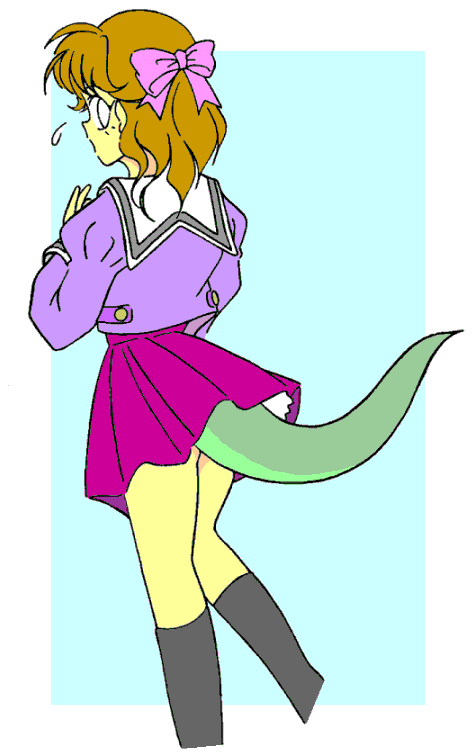
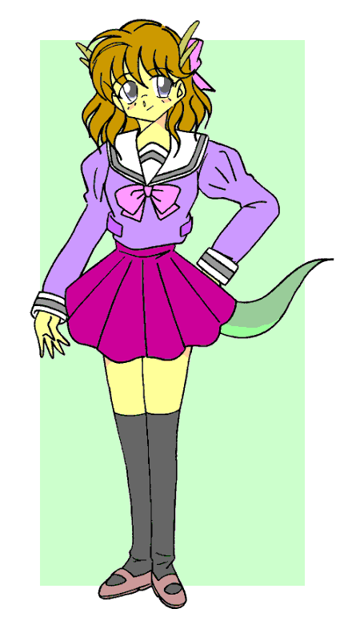

戻る
『ぱわふる どらごんてーる』
作： 南文堂
イラスト： ＭＯＮＤＯ さん
その昔、この地には竜神がおったそうな。
その竜神、たいそう気が短く、ことあるごとに暴れて村人たちを困らせておったそうな。村人たちは竜神の怒りを鎮めるために社を建て、巫女に祭らせ、毎年酒と穀物を貢物して暴れぬようにしておったそうな。
ところが、ある年の春。貢物を納めた後に竜神が突然暴れだしたそうな。家を押しつぶさんばかりの雨を落とし、雨のように雷を降らせたという。たいそう、竜神はお怒りになっていたそうな。
そういっても、村人たちは一体何が気に入らないのかわからず困り果てた。そこで竜神を祭っている巫女にお願いして、なんとか怒りを鎮めてもらうことにしたそうな。
村人の願いを聴いた巫女は竜神の住むという淵へと向かい、その淵に張り出した岩棚で祈祷を続けたが、一向に怒りは鎮まらず、ますますひどくなったそうな。
巫女は竜神の怒りをその身に取り込み鎮めるべく、淵へと身を投げたそうな。
巫女の身投げで竜神の怒りは鎮まり、それ以来、二度と竜神が暴れることはなかったそうな。
それから、竜神の住む淵を『竜が淵』、巫女が身投げした岩棚を『沈め巫女の岩棚』と呼ぶようになったそうな。
「――というのが、この地に伝わる竜神伝説のダイジェスト版だ。和菜（かずな）、聞いてるか？」
水着姿の日に焼けたたくましい身体の青年が、初夏の日差しの降り注ぐ岩の上で入念に準備体操をしながら、少し離れた木陰に腰を下ろして本を読んでいる女性に話して聞かせた。
「ふーん、そう。そういうの、よくある話よね、達也（たつや）」
木陰の女性は「全く興味ありません」とはっきり口にする次ぐらいきっぱりと自分の意思を明確に含んだ声と内容で返事した。もちろん、視線は本から一瞬たりとも動かさない。
「ああ、確かによくある伝説だ。不良学生が五人対一人の喧嘩に勝ったというぐらいポピュラーな伝説だ。地元の人間もありきたりすぎて観光名所の案内にも書くのをためらうぐらい、ありきたりだ」
言葉の内容とは裏腹に達也の声は照りつける初夏の太陽より熱を帯びていた。
「そのありきたり伝説を調べるために、久しぶりのデートをこんな山奥にしたわけ？」
和菜は本から視線を外さなかったので見ることはできないが、恐らくその瞳は怒りで真夏の無慈悲な太陽よりも真っ赤に燃えていただろう。声にはそれを物語るだけの素粒子を多分に含んでいたことは容易に観測された。
「まあ、そういうことになるな」
しかし、達也の方はその怒りの素粒子をニュートリノと同じように軽く透過させて平然と答えた。そして、それは和菜の超新星を爆発させるきっかけになった。
しおりも挟まず、両手でハードカバーの分厚い本を勢いよく閉じて、彼女は顔を上げた。
「いい加減にしてよね！ あたしはすんごく忙しいの！ だけど、一緒にいたいから、二人で楽しみたいから、時間を苦労して作ってきたのよ。それを自分の趣味ばっかり！」
にらみつける目は少し潤んでいた。それを看取った達也は少し困った表情を浮かべた。
「怒るなよ、和菜。お前、ここのところ研究所にこもりっきりだっただろう？ 片時も本を離さずに。たまにはこういう自然の空気を吸わないと、病気になるぞ」
達也は腰をねじる準備体操の動きを利用して和菜の方に身体を向け、少し寂しそうに笑った。その寂しそうな笑顔を見て彼女も彼が自分のことを気遣ってくれていたことを気が付き、怒りの赤い顔は恥ずかしさの赤い顔に変わった。
「もっとも、それを口実に俺の趣味につき合わせていることは否定しないがな」
和菜の表情の変化を見て、達也は今度は腰を反らせて彼女の方に向いて、寂しそうから悪戯っぽい笑顔に入れ替えた。
「バカ達也！」
達也の手の内で踊らされた気分になった和菜は頬を膨らませて、少し拗ねたように罵声を浴びせた。
「大いに結構。それでこそ、いつもの和菜だ」
しかし、言われたほうはニコニコして罵声の浴びせ甲斐のないことこの上ない。諦めてため息をついて、彼をじっと見つめ、和菜は不意におかしそうに笑い出した。
「な、何か変か？ まさか、水着が破けてたりしてるのか？」
達也はその笑い声にそれまでの泰然とした態度を崩して、少し狼狽しながら自分の身体を確認した。水着の後ろ前、大事なところがはみ出てないか、顔に何かついていないか……。
「まったく、達也って、大人か子供かわかんないわね。それがおかしかっただけ。別にどこも変じゃないわよ」
和菜は笑いながら首を振り、ピエロの踊りのように自分の身体をチェックしていた彼に自分の笑っている理由を教えた。
「なんだよ、それ？」
達也は狼狽ぶりが恥ずかしかったせいか、少し顔を赤くして、それを誤魔化すようにむっとした。
「まあ、いいじゃない。あたしたち、いいコンビってことよ。――で？ その伝説には達也の琴線に触れる何かがあるんでしょ？」
和菜は笑い顔を絶やさずに話題を本題へと戻した。
「そのとおり。この伝説に登場する巫女は竜神と心を通わせるために神石を用いていたというんだ。その神石の名前は『金剛の竜玉』。古文書の記述では水晶のように透明で、日にかざすと七色に輝き、何よりも硬く、刀でも傷をつける事ができなかったとある。何かに似てると思わないか？」
達也はにやりと笑って、和菜に問題を出した。
「透明で硬くて輝くほどの屈折率……ダイヤモンド？」
「正解♪」
和菜は驚くよりも眉をしかめた。彼女の反応も当然である。芥子粒の欠片の破片ほどの大きさでも、日本でダイヤモンドが発掘されたことはない。地質学的にも日本の地中にダイヤモンドが埋まっていないだろうと考えられている事も知っていた。
「古文書の記述が確かなら、少なく見積もっても五千二百カラット以上。世界最大のダイヤモンド、カリナンの原石三千百六カラットを上回る大きさだ。清純無垢な宝玉というからカラーもＨクラス以上、透明度は最低でもｓｉレベル、おそらくはｖｓレベルだろう」
専門用語が並んでいるが、要するにでっかくてすごい価値のあるダイヤモンドと言うわけである。
「見つかったら、世界中が大騒ぎね」
あまりの話に眉をひそめていた和菜も噴出して笑い出した。それを見て、達也は拗ねるように頬を膨らませた。
「笑うなよ。見つからない事が証明されるまでは存在しているんだから」
「ごめん。そうだったわね。あたし、科学者の端くれなのに」
「まったくだ。世界の英知といわれる竜飼和菜（りゅうかい・かずな）博士ともあろう人が」
達也のその言葉に和菜は顔を少し強張らせた。彼はそれに気づいて慌てて話題を元に戻した。
「――まあ、その宝玉を抱いて巫女はこの岩棚から淵に身投げした。ということは、この淵にはその宝玉が眠っているってことだ。完璧だろ？ 和菜」
「流されていなければね」
和菜は強張った表情を解きほぐすように微笑んだ。
「その時は諦める。だけど、探す価値はあるだろ？」
「ないって言っても、探すんでしょ？ でも、それならダイビングの道具ぐらいは持ってきなさいよ。潜ることはわかっていたんでしょ？ 日曜トレジャーハンターの達也でもそれぐらいは持ってるでしょ？」
和菜はダイビングの装備も持ってきていない達也を呆れ顔でみつめた。これでは真剣なのかふざけているのかわからない。やるからにはちゃんとやるのが彼女の流儀であった。
「もちろん、持ってるよ。だけど、今回は使えない」
達也は和菜の言葉に困ったように頭をかいた。その様子に和菜はあることが頭に閃いて、そのままそれを口にした。
「また、質に入れたの？」
「失礼な！ まだ入れてない。入れかけたけど」
達也は反論して、ちょっと恥ずかしくなったのか、居住まいを正して、和菜に向き直った。
「この淵の底は岩が入り組んでいてボンベを背負っていたら行けないところが多いんだ。というわけで、ポンプで空気を送ってもらうというわけだ。これで潜り放題」
達也は和菜が腰掛けているカバンを指差した。空気を送るポンプにしては小さいが、彼が改良したのだろうと彼女は納得した。彼はそういう事にかけては天才的なエンジニアでもあった。
「まめなことね」
「お褒めの言葉として承っておきます」
あきれる和菜に達也は恭しく頭を下げた。
「よきにはからえ。――でも、もし伝説が本当で流されずにあったとしたら、村の人とかが潜って見つけていそうに思えるけど」
「ふふふふ、その点は大丈夫！」
達也は不敵な笑みを浮かべつつ、カバンを引っ張り出し小型ポンプのセットを始めた。
「何が？」
和菜は一抹の不安を覚えながら訊いた。彼がそういう笑い方をするときはろくな事がない。これまで何度も、そして、必ず。
「さっき、地元の観光案内にも載せるのが憚られるって言っただろ？」
「あまりにもありきたりすぎてってね」
「そう。だけど、それ以外にも理由があるんだよ」
「いいかしら？ とーっても嫌な予感がするのはあたしの気のせい？」
和菜の背中に嫌な汗が噴き出して、その不快さもあいまって、顔をしかめた。
「いいや。多分、予感的中」
しかし、達也は対照的なほど明るく朗らかだった。
「あたし、帰る！」
和菜は回れ右して引き返そうとした。達也はその腰にしがみついて、彼女が帰るのを力ずくで引き止めた。
「待ってくれ。ポンプを見ておいてくれないと困るんだ。故障はしないと思うが、安全確保はしておかないと怖いだろ」
しかし、和菜は達也を引きずりながらも前進をやめようとしない。
比較的小柄でしかも運動不足で体力がないのに、和菜はどこにそんな力があるのかと信じられない力で達也を引きずっていく。
……否、力を発揮せざるえないのであった。なぜなら――
「あたしがお化けとかダメなの知ってるでしょ！」
「迷信だ。そんな非科学的なこと信じるなんて科学者らしくないぞ」
達也は文字通り、食い下がった。
「非科学的だから怖いのよ。科学的ならブラックホールだって怖くないわよ」
「そんな屁理屈いわずに、頼む！ 一生のお願いっ」
達也は恥も外聞もなく土下座して頼み込んだ。ちなみに和菜との付き合いで達也はかれこれ二十回ほど「一生のお願い」をしているが、お願いをした次の日からは生まれ変わって新しい人生を始めているので問題はないというのが彼の理屈だった。
「どっちが屁理屈なんだか」
和菜はそのことを思い出して、思わず言い返した。が、このまま自分が帰っても彼は諦めずに単独で潜るだろうこともわかっていた。もし、そこで何かあったらと思うと、非科学的なことでかいた背筋の汗が凍った。
「まったく。あたしって、どうしてこうもお人好しなのかしらね」
和菜は自己嫌悪に陥った暗い顔で前進を止めた。
「ありがとう。恩に着る」
達也は土下座しながら顔を上げ、喜色満面で喜んだ。
「で、その理由を教えておいてくれる？ 知るのも怖いけど、知らないでいる方がもっと怖いから」
再びポンプのところまで戻った和菜が青い顔で達也に尋ねた。
「ああ、それもよくある話だよ。この淵には竜神の眠りを守る竜人というのがいて、眠りを邪魔する人間――要は淵に潜ろうとする人間だな、これを殺すというやつだよ。なんでも、伝承には何度か登場していて、炎を吐き、雷を自在に操る尻尾が生えた人の形をした竜の化身らしい」
和菜は達也のよくある話を聞いて、こめかみに指を当てて唸った。
「観光名所にすれば伝説を聞いて、あたしの目の前にいるバカみたいに潜ろうとするバカが大勢出てくるかもしれない」
「まあ、ありえない話じゃないね」
達也は和菜の言葉に苦笑を浮かべて頷いた。
「伝説が嘘でも、昔からの言い伝えには何か隠れた真実がある事が多い」
「そのとおりだね」
達也は和菜の言葉に神妙な顔で頷いた。
「その隠れた真実のせいで、事故があれば村としては迷惑極まりない。そういうわけで、案内に載せない。ありきたりが理由じゃなくて、そっちが本当の理由でしょうが！」
和菜の怒りが爆発した。
「そういう説も学会では唱えられているが、確証がないそうだ」
達也はしれっと彼女の怒りを受け流すと、ポンプの準備を完了してレギュレーターを口にくわえて岩棚の端に立った。
「それじゃあ、行ってくる。何かあったらロープを引いて合図してくれ。頼んだぞ、世界で一番頼りになる相棒」
達也は和菜に向かって茶目っ気たっぷりのウィンクをすると、彼女の返事も待たずに下の淵へと飛び込んだ。数秒の間があり水音が淵のまわりに響いた。
和菜は岩棚の端までこわごわにじり寄って下を覗くと、遥か下の森よりも静かで深かい緑の淵にその静けさを騒がすように波紋が揺れていた。あまりの高さに目をそらすと、ずるずると送り出されるチューブとロープが見えた。彼女は軽くため息をついて、彼の最後の言葉を頭の中で反芻した。
世界で一番頼りになる相棒。
「まったく。調子いいんだから」
和菜はくすりと笑って順調に動くポンプをいとおしそうに眺めた。
透明度が高いとはいえ、水の中である。深く潜れば水面から差し込む光も薄れて闇に沈む。その光に浮かび上がる淵の底は奇妙な形の岩が林のように生えており、底へ続く側面の岩壁も何かが暴れたようにあちこちが抉れて前衛芸術をしていた。
達也は不意に寒気を感じた。水の冷たさもあったが、目の前に広がる荘厳な風景がそう感じさせているのかもしれない。彼はそう思いつつ、心の中で微笑んだ。
（こういうのがあるからやめられないんだよな。和菜にも見せてやりたいけど、あいつ、頭は抜群にいいけど運動音痴だからなぁ）
達也は和菜とつながっているチューブを意識した。順調に送られてくる空気をいとおしく感じた。
（空気があるとはいえ、あんまり長居はするわけにはいかないな）
本来の目的を思い出してライトのスイッチを入れて周囲を見渡した。石柱の林はかなり入り組んでいるのが改めて見て取れた。
（やっぱり、思ったとおり、ボンベを背負ってたら底まで行けないな）
達也は石柱で身体を傷つけないように注意しながら底を調べて回った。
（ん？ 穴がある）
彼は石柱の林の奥に人一人がやっと入れるほどの大きさの穴を見つけた。中をライトで照らしてみたが、光が底まで届かずに水に吸い込まれて、闇の静寂を守っていた。
（ちょっと危険だが、入るか）
彼は決断すると即実行に移した。ロープとチューブが石柱に引っかかり傷つかないように慎重に穴の中へと身体を滑り込ました。穴はすぐに広がり、ある程度の広さの部屋になっていた。
（こんなところがあったなんて、驚きだな）
そうしてライトをめぐらし、部屋の底を照らした時、彼は思わず、口にくわえたレギュレーターを放しそうになった。
（竜神！）
そこには竜がとぐろを巻いていた。
（――いや。どうやら、彫刻らしいな）
達也はその竜が石に彫られたものと見抜き、竜がとぐろを巻く底へと舞い降りた。
近くによって調べるほど、見事な竜の彫刻であった。達也はトレジャーハンターの趣味のおかげで少々美術には詳しいが、この荒々しさと力強さがにじみ出て、先ほどまで生きていた竜を石化したかのような迫力は驚きを隠せなかった。
（昔の村の人間がこれを見つけて、竜神がいるといったのかもしれないな。しかし、こりゃあ、とんでもないものを見つけたもんだ）
ここは昔、どこかに繋がる空気のある洞窟で、その時に誰かが竜を彫ったのだろう。その洞窟の入口が地震か何かで塞がり、さらに天井の一部が崩れて淵の水が流れ込んで水没した。これが達也の推測であった。
（静かに眠っている……）
達也はその竜を見つめながら水中で頭をかいた。陸に上がって、これを誰かに教えるのもいいが、今まで静かに眠っていたのに、騒がせるのも竜に悪い気がしてならなかった。
（とはいえ、俺もその眠りを妨げている一人なんだがな。とりあえず、このことは秘密にしておくか。俺も早々に退散しよう）
引き上げる前にもう一度、竜をライトで照らし、その姿を目に焼き付けようとした。そのライトに何かが反射して輝いた。
（なんだ？）
達也は心臓が跳ね上がり、興奮を抑えつつ輝きへと泳ぎ寄った。ちょうどとぐろを巻いた竜の中心、頭の部分である。光ったのはその額の辺りであった。
彼が額を調べるとこぶしほどの大きさのある透明な塊を見つけた。
（これは……『金剛の宝玉』？ しかし、まさか……）
その宝玉は荒々しい奇妙なカットであったが、ダイヤモンドの輝きを放っていた。彼は水中で生唾を飲んだ。見た目では六千カラットぐらいありそうだ。例え不純物を含んでいても、カットと分割で一財産は生み出せる。
（とにかく陸に上がって鑑定をしないとなんとも言えないな）
彼は宝玉を手に取った。その瞬間。
（ぐっ！）
彼は体の中が熱くなる感触に思わず顔をゆがめた。それは次第に灼熱と変わり、全身の内側を業火の炎に焼かれているような激痛に襲われた。
（ぐはっ）
あまりの苦痛に身体を丸めたが、当然そんなことで収まることはなかった。それどころか極度の激痛に神経が焼ききれたように視界が真っ白になった。
（……呪いか……）
非科学的なことだが、現代科学で証明できるのはごく一部であり、古代の知恵が現代の知識を上回っていることはさほど珍しいことではない。それを常々実感している彼は自然とそれを考えた。
達也は水の中で苦痛にのた打ち回った。いつの間にか宝玉は手から落ちて、どこかにいってしまっていたが、そんなことは今は重要ではなかった。
（おぐっ！）
不意に空気ではなく水を吸い込んだことに達也は更にパニックになった。何故だか、咥えていたはずのレギュレーターを離してしまっていた。
（くっ！ 大バカヤロウ！ いつの間にレギュレーターを離したんだ？ どこだ？ くそ！ 見えない。コードもなくなっている――そうだ！ 命綱だ。なんだ？ 手ごたえがない！ 切れてる？ いつの間に）
達也は数分後の死を意識した。呪いではなく、溺死というより直接的で確実な理由の。
（冗談じゃない！ 和菜への婚約指輪を取りに来て溺死なんてできるか！）
達也は野生の勘を頼りに手足をばたつかせた。相変わらず視界は白い闇のまま。息苦しさが身体中を締め付けるように手足を鉛へと変えていく。それが重りのように水底へと彼を誘う。しかし、彼はそれに必死で抗った。文字通り正真正銘、必死である。
（死んでたまるか！）
岩棚の上にいた和菜もすぐに異変に気がついた。
大量の気泡が淵をあわ立たせたかと思うと、そのまま静かに連続的に小さな気泡が浮き上がった。達也がちゃんと呼吸しているなら気泡は断続的にまとめて出てくるはずである。
「達也！」
和菜は初夏の日差しの下で真冬のように白い顔になり命綱を軽く引いた。手ごたえがない。
「達也！」
和菜はますます青ざめ、氷河のような顔色になると必死で命綱を引いた。しかし、手ごたえはなく、ついにはその先端が水面から引き上げられた。
携帯電話を取り出し、急いでレスキューを呼ぼうとしたが、アンテナの横には虚しく『圏外』の文字が浮かび上がっていた。
「役立たず！」
携帯電話を投げ捨て、いても立ってもいられなくなり、岩棚を降りて、その淵のすぐ下流の岸へと急いだ。
運動は苦手で、泳ぐのなんて何年もしていない。でも、小さい時はスイミングに通っていたから少しは泳げるはず。
和菜は自分に言い聞かせながら、岸にたどり着くと靴と上着を脱ぎ捨てて川に飛び込もうとした。
しかし、ちょうどその時、少し離れた岸に人が這い上がり、上半身だけを岸に乗り上げて倒れこんだ。
和菜は泣きそうな目でその這い上がってきたものに注目した。
「達也？」
しかし、残念ながら彼女の探す達也ではなかった。上半身だけ、しかもうつぶせであったが、達也にしてはそれは小柄すぎた。腕は華奢で、肩から背中のラインは滑らかで色香があり、川の水も、初夏のまぶしい日差しも弾くほどの張りと白さがある。どう見ても少女と言っていい年齢の女性であった。
失意の和菜をよそに、その少女は腕立て伏せの要領で勢い良く上半身を起こした。
「ぐはっ！ 死ぬかと思った。今回はマジで」
歳は十代後半だろうか、二十歳過ぎで童顔の和菜よりも幼い顔立ちで、若いつんと上を向いた張りのある控えめな胸を惜しげもなく白日に晒している。
髪は濡れそぼっているが、明るめの茶色で少しウェーブがかったセミロングをしていた。顔立ちはそれがよく似合う少し勝気そうだが、それでいて愛嬌も感じさせるもので、同性の和菜から見ても魅力的な女の子であった。ただ、女の子らしい慎みには少し欠けるらしく、上半身裸で胸を露わにしている上に、粗野な言葉まで吐いていた。
しかし、今は緊急事態である。そんな些細な事に構っている時間はない。その少女が淵から上がってきたのなら達也を見ているかもしれないと、和菜は少女の方へと向かった。
「達也を、達也を見ませんでしたか？」
和菜は切迫した声で少女に訊いた。知らないと答えたら、すぐにでも探しに淵に飛び込まなければいけない。時間との戦いであった。
「おいおい。こっちは死にそうになってたんだぞ。いきなりボケをかますなよ、和菜。お前の達也は目の前にいるだろうが」
少女は苦笑しながら和菜の問いに答えた。和菜は少女の答えに周りを見渡したが、少女以外には誰もいない。
「ふざけないで！ 人の命がかかっているのよ。もういい！ 待っててね、達也」
和菜は少女を殺しかねない目で睨み付けると淵へと飛び込もうとした。それを見て、少女は慌てて岸へ全身這い上がり、彼女を止めた。
「おい！ ちょっと待てよ」
「なによ！ 邪魔しないで――っ！」
和菜は邪魔する少女を再び睨んで絶句した。少女は男物の水着をつけ、その腰の後ろから緑色の太い丸太のようなものを生やしていた。先端に行くほど細くなっていくそれはまさしく、巨大なトカゲの尻尾そのものであった。
「きゃ、きゃー！ あ、あなた、なんなのよ！」
和菜はありったけの悲鳴をあげて数歩後ろに下がって腰を引きつつも身構えた。
「なんなのって、お前の恋人の根牛達也（ねうし・たつや）。二十五歳独身男性。まじりっけなしの日本人。特徴は、強いていうなら、美青年のナイスガイ」
少女はびしっと自分を指差してさわやかな笑顔を浮かべた。人をおちょくっているような態度と返答に和菜は困惑の表情を浮かべた。
「いかにも達也の言いそうなことだけど……そ、その水着は！」
和菜は少女の半ばずれてはいるが、腰を覆っている見覚えのある男性水着に気が付き、息を呑んだ、
「水着？」
「達也のじゃないの！ まさか、あなた、達也を！」
少女が水着を見ようとする前に和菜は半乱狂な叫び声を上げた。達也が潜る前に言っていたこの淵を守る竜人のことを思い出し、怒りと悲しみと恐怖でパニックになったのである。
「おいおい。いい加減にしろよ、和菜」
「いやっ！ 来ないで！」
パニックになっている和菜を落ち着かせようと少女が一歩彼女のほうへ近づくこうとすると、和菜は一目散に逃げ出し、岩棚を登った。
「おい、待てよ」
少女はあっけに取られて、和菜を追いかけて岩棚を登った。和菜は岩棚の上まで登ったところで息が切れ、肩で息をしていた。しかし、そこから和菜らが乗ってきた車の所まで行くことを諦めるつもりはなかった。もっとも、よろけるように走っている和菜はその前にあっさりと少女に追いつかれたが。
「待てったら。おかしいぞ、お前」
少女に肩を掴まれ、和菜は何かに弾かれたように振りほどき、その勢いで地面に尻餅をついた。
「おい、大丈夫か？」
「いやっ！ いやぁー！ 来ないで！」
心配して駆け寄ろうとする少女に向かって、和菜はたまたまそばにあった達也が持ってきていたかばんの中のものを少女に向かって投げつけた。
「おい！ ちょっと、やめろ」
少女はそれを避けたり受け止めたりしていたが、和菜がある金属製の円盤をつかみ出した途端、少女の顔色が変わった。
「おい！ それは！」
青ざめる少女を無視して、というか、見もせずに和菜はその金属円盤を少女に投げつけた。少女はその円盤に飛びつくように必死でキャッチした。
「バカ和菜！ 俺の大事な宝物を投げるなんてどういうつもりだ！」
少女はその円盤を無事にキャッチしたことを確認すると目に怒りの色を浮かべて和菜を怒鳴った。少女の声であっても、その怒号は充分に迫力があり、和菜は身を強張らせた。
「だいたい、お前は物を大切にしなさ過ぎる。前から何度もいっているだろうが、この銅鏡は七星神獣鏡といってな、八咫鏡（やたのかがみ）に匹敵する超国宝級の大事な貴重な鏡なんだぞ。それを投げつけるなんて、人類の文化遺産の破壊活動だぞ。そのことをもうちょっとだな――」
少女は鏡を小脇に抱えてくどくどとお説教は始めた。
和菜は怒鳴られた事でパニックを脱して冷静になり、冷静になって見てみればこの少女と達也の言動は驚くほど似ていて、同一人物かと思えるほどだった。
超がつくほど国宝級の割にはかばんに裸で入れている達也。それを素手でべたべたと平気で触っている少女。どちらもにたようなもので、しかもお説教の内容がが達也のいつも言っているものと全く同じであった。
「そんな事が？ でも……」
「でもも、へったくれもない！ 言い訳無用だ」
少女は和菜の呟きが耳に入り、怒りをヒートアップさせた。
「もしかして、あなた、達也？」
和菜は頭の中に浮かんだ推理を少女におそるおそる問い掛けた。
「だから！ 最初からそう言ってるだろうが！ 別人に姿が変身したわけじゃあるまいし、お前、少しおかしいぞ」
少女はさらに怒りを露わに和菜を怒鳴りつけ、怒る気力も失せたといわんばかりにかわいらしい鼻を鳴らした。
「そうだ。鏡に傷がついていないか見ておかないと……」
少女は鏡の鏡面を確認しようと覗き込んだ。そして、しばし硬直し、ゆっくりと鏡を下ろして、再び急いで鏡を覗き込んだ。
「……」
硬直していた少女が次第に全身をプルプルと痙攣させ始めた。和菜はその様子を見て、確かにショックだろうと気持ちを思いはかり、かける言葉に迷った。
「達也……」
「和菜！ 見てくれ！」
心配そうに声をかけた彼女に少女は喜色満面の笑みを浮かべて鏡を彼女の方に向けた。鏡には心配そうな彼女の顔が映っていた。
「魔鏡だ！ それも反射した光で壁を照らして像を結ぶ普通の魔鏡じゃなく、全く別のものを鏡の中に映し出す正真正銘の魔鏡だ。くーっ！ 清水坂の骨董市で露店のオヤジに吹っかけられたけど、正真正銘のすごい掘り出し物だ！ これまでは普通の鏡だったのに、今見たら、鏡に女の子が映っていたんだ。ほら、見えるだろ？ 和菜にも」
「ええ。まあ、見えるけど……」
少女の迫力に押されて曖昧に返事をした。
「そうだろう、そうだろう。すごいぞ、これは！ 映っていた女の子、なかなか美少女だったな。しかし、それよりも二回見て、二回とも表情が違った。どういう仕組みかわからないが、すごい仕組みだ。和菜にはどう見えた？」
「少しウェーブがかったセミロングで勝気でかわいい顔立ち。身長は私と同じぐらいで、胸のサイズはかわいいらしいけど張りがあって形も綺麗。少し細身で引き締まった手足で、色白のトカゲの尻尾をお尻から生やした女の子」
和菜は目の前で興奮している少女を描写していった。
「何？ 全身が見えるのか？ 角度の問題かな？」
少女は鏡を固定したまま身体を移動させて鏡を覗き込んだ。
「やっぱり、顔だけだぞ。さっきと表情は違うが……ん？ 動いた？」
少女が首をひねると鏡の中の少女も首をひねった。それを見てますます首をひねった。
「見せたあげるから鏡を貸して」
和菜はあまりにも鈍い少女から鏡を奪い取ると、少女の全身を上から下、下から上へと鏡を動かして見せてやった。
「おお！ すごい！ トカゲのような尻尾があるなんて珍しい。何かの伝承の人物かな？ ――帰ったら調べてみよう」
全身を確認して感動している少女にあきれるでもなく、怒るでもなく、和菜は無感情に自分のかばんの中から化粧用の鏡付きコンパクトを取り出し、それを開けて少女に向けた。
「達也、こっち見て」
「なんだ、和菜？ 今、俺はモーレツにだな……」
少女は和菜が広げたコンパクトを見るように目で導かれ、そして、そこに映った少女の姿を見て叫び声をあげた。
「いつの間にお前のコンパクトも魔鏡になったんだ！」
ここまで来るとわざとと思えるが、和菜の知る達也ならありえた。妙に鋭いくせに変なところで天然記念物並に鈍いのが彼女の恋人の特徴の一つでもあった。しかし、だからといって、その鈍さにいつまでも付き合うほど和菜も人間できてはいない。
「いい加減に気がつきなさいよ！ 自分の目で自分の姿を直接見てみなさい」
和菜が怒鳴ると少女は自分の身体を身体をひねって可能な限りあらゆる角度から観察した。
「おっ、俺が、俺がトカゲ系可憐美少女になってる！」
少女――達也にとっては充分すぎる衝撃だったのだろう。絶叫が静かな谷にこだまして、彼――彼女はそのまま気を失ってしまった。
初夏の季節は木々の成長が一番著しいのか、森全体が生気でみなぎっているように見えた。青葉の匂いが充満して少しむっとする空気も木々の生気が漏れ出したためのように思える。そんな季節であった。
川の上流では、日陰ならばまだ残雪すら残している。そのため谷を滑り降りてくる風は軽やかであった。きつい日差しで火照った肌を心地よく冷やしてくれる涼しさを持ち、湿気に満ちた空気を洗い流してくれた。
何もなければ最高のピクニック日和、森林浴日和、自然満喫リフレッシュ日和であったが、彼女たちにはあまり最高とはいえる状況ではなかった。
「はあ、一体どうすりゃいいんだよ……」
少女は肩を落として岩棚の上に座り込んでいた。さすがに女の子が上半身裸のままで胸を放り出しているのは色々とまずいと和菜が言い出し、達也自身のＴシャツを着ている。しかし、大き目の男物のＴシャツを着た若く健康的な少女というのはなかなかに色っぽく、丸首の襟元から覗く少女の鎖骨に女の和菜ですらドキッとするほどであった。
「どうするっていっても、考えられる原因はその宝玉に触ったせいなんでしょう。けど、その入り口も見つけられなかったんでしょ？」
落ち着いたところで、少女いわく、「トカゲ系可憐美少女」になった原因を考える。
その原因最有力候補があの宝玉であった。そこで、もう一度あの宝玉に触るか、それがだめでも宝玉を回収して分析することで何かしらの突破口が見つけられると考えたのであった。
善は急げとばかりに、少女はもう一度、淵に潜ったが、竜の彫刻のあった部屋へと通じる穴は見つからなかった。その代わりに、石柱の林があちこちで崩れ、倒れていた。おそらく、穴から出てくる時に無我夢中で石柱をなぎ倒してしまい、それで穴がふさがったのだろう。
というわけで、謎を解く鍵となるはずの宝玉は見つける事は、ほぼ不可能になってしまったのである。
「一体どうすりゃいいんだよ……」
少女はもう一度同じ台詞を口にして深いため息を吐いた。
「どうするもこうするも、元に戻ることも重要だけど、その目処は何にも立っていないんだから。とりあえずは当座の生活をどうするかね」
和菜は冷静に状況を分析して、少し無責任で他人事のように正論を口にした。
「山の中で隠匿生活するしかないだろうな。こんな姿で街にはいけないからな」
少女はますます落胆の色を濃くした。
「達也は自然好きだから良かったじゃない」
「俺は自然が大好きだ。だけど、だからといって住みたいわけじゃない。俺はこう見えても、シチーボーイなんだぜ」
「今は、ガールだけどね」
ふざけているのか冗談なのかわからないが、少女の言葉に和菜はツッコミをいれて、くすりと笑った。
「人事だと思ってからに」
少女は和菜との間にある問題に対する温度差に不機嫌になり、むくれて膝を抱え込んだ。
「はいはい。むくれない。大丈夫よ。都会でちゃんと暮らせるから」
和菜は少女のむくれた姿を「かわいい」と頭をなでた。
「同情するなら金をくれ――じゃなかった、根拠をくれ。慰めで大丈夫といわれても仕方ないんだよ」
「うーん、強いてあげるなら、かわいいから。かしらね？」
「なんだそりゃ？」
少女は和菜の回答に露骨に怪訝な表情を浮かべた。和菜の方も上手い回答ができないで困惑顔になった。
「まあ、田舎にいるよりも都会にいた方が普通に生活できるのは確かね。あたしを信じてくれない？」
そういう和菜の目を少女はじっと見た。和菜は少女の目から逃げずにその視線を受け止めていた。それがあまりに真剣なものだったので、少女のほうが折れざるえなかった。
「わかった。降参だ。和菜に任せるよ」
少女は諸手を上げて全面降伏して軍門に下った。
「わかってくれて、ありがとう。竜美ちゃん」
彼女は少女をぎゅっと抱きしめた。抱きしめられるのは心地よいものだが、彼女の台詞の中にどうしても気になる事があったので、心地よさに流されるわけにはいかなかった。
「ちょっと、待ってくれ。その『たつみ』ちゃんというのはなんなんだ？」
「その姿で『達也』というわけにはいかないでしょう？ だから、新しい名前をつけてあげたの。美しい竜と書いて、『竜美』。いい名前でしょう、竜美ちゃん？」
和菜は妹ができたかのように少女を更に抱きしめた。
「何を勝手に決めてるんだ。おい！ 和菜、俺の話を聞け！」
少女は和菜の腕の中でじたばたと暴れまわった。しかし、彼女は少女を解放するつもりはなかった。
「もう、決めたもーん」
少女は和菜のその決め台詞を聞いて、がっくりとうなだれた。彼女がその決め台詞を言った限り、天地が逆になってもその決定事項は変わらない。ちゃぶ台返しの星一徹もびっくりなほど頑固一徹というのが根牛達也の恋人であった。
「俺も男だ！ こうなったら、毒を食らわば皿まで。とことん付き合ってやる！」
ほとんどやけくそで少女――竜美は叫んだ。
「そう来なくっちゃ」
和菜はその台詞を聞いてにっこり笑うと、竜美から身を離して、自分のバッグを開いてなにやらごそごそ探し始めた。
竜美が不審がっているのもつかの間、和菜は自分の着替えを持って竜美の元に戻ってきた。
「まさかと思うが」
竜美はその着替えの意味するところを予測して、嫌な汗を体中ににじませた。多分、四六のガマより嫌な汗を出していただろう。
「そんな格好では帰れないでしょ？」
一歩前進。
「だからと言って、女の格好なんて！」
一歩後退。
「仕方ないじゃない。今は女の子なんだから」
一歩前進。
「女の子だからといってもだな、ほら、その、ジーンズとか、パンツルックとか、ジャージとかあるだろ？」
一歩後退。
「残念ながら無いのよ」
一歩前進。
「うそつけ！ ジーパンを持ってきているはずだ。山歩きするからと言っておいたから持ってきてるはずだ」
一歩後退。
「確かに、荷物の中にはジーパンはあるけど、竜美ちゃんにはスカート以外はありえないの」
一歩前進。
「自分の趣味を無理やり押し付けるな！」
一歩後退。
「違うわよ。だって、はけないじゃない。尻尾が邪魔で。まさかお尻丸出しで歩くわけには行かないでしょ？ いくらローライズが流行しているからって」
一歩前進。チェックメイト。
「……尻尾」
少女はがっくりと膝を落とし、和竜戦の第一回戦は竜美の投了で完結した。
和菜は、竜美のＴシャツを脱がせるとブラジャーを着けて、パンツをはかせた。もちろん、パンツは全部上がらなかったが、とりあえずは大事なところを隠せたのでよしとする事にした。
「帰ったら、知り合いの下着デザイナーに竜美ちゃんスペシャルを作ってもらうようにお願いしてあげる」
楽しそうにはしゃいで竜美に安心するよう言ったが、その言葉で竜美はますます不安になっていく。
結局、竜美は白いフレアスカートを穿かされ、上はパステルイエローのパーカーをかぶせられ、仕上げに軽くリップまでひかれた。
「きっちりお化粧しても栄えると思うけど、今の格好だとあまりお化粧しないほうが似合うから」
しかし、達也は充分すぎるほど男のアイデンティティーを攻撃され、落城寸前まで追い詰められていた。
「充分だよ。ああ、男の俺がこんな格好をする事になるとは、とほほほ」
「何言ってるの。今は女の子じゃない。それにかわいいわよ。嫉妬しちゃうぐらい」
「全然うれしくないよ」
「まあ、その内わかるって」
「わかりたくもない」
そういいつつ、自分の姿を気にして身体をひねって見たり、鏡を借りて姿を写して見たりとしている竜美に和菜は微笑を浮かべた。和菜は自分の姿を確認する竜美の目にまんざらじゃなさそうなものをしっかりと見取っていた。
「じゃあ、帰りましょうか。あんまり遅くなると運転不安だし」
「大丈夫だよ。夜道は慣れてるから」
竜美は明るいうちに帰ると誰かに見られるかもしれないので、出発を遅くしようと提案した。
「あたしは慣れてないのよ。――竜美ちゃん、まさか運転するつもり？」
「そのつもりだけど、っていうか、まさか和菜が運転するつもりか？」
少女の顔が今日一番、青ざめた。
「当然じゃない。尻尾が邪魔でまともにシートに座れない竜美ちゃんに運転させるわけにはいかないわよ」
「あ！ ……またしても、尻尾……」
竜美はがっくりとうなだれた。和竜戦第二回戦も尻尾によるＴＫＯであった。
「和菜オネエサマに任しておきなさい」
和菜はポンと胸を叩いたが、竜美は無事に生きて自分たちの住む街に帰れるかどうか、さっき竜の祠で死にかけた時よりも死を予感した。呪いではなく、交通事故というより確実な死を。
その日の夕方。あっちこっちを傷だらけにしたクロカン４ＷＤが達也たちの家の駐車場に止まっていた。
後日、竜美はその日のことを
「あの距離を和菜の運転で無事に帰ってきた。あれこそ、最大の奇跡だと思う」
そう語ったという。
夏至は過ぎたものの、太陽はまだ充分早起きで、朝のニュースバラエティー番組のラッシュの時間帯といえども日は高く上って、その寝室も薄いカーテン越しに差し込む光でかなり明るかった。しかし、ベッドの上の少女は大きな抱き枕に小さな身体をしがみつかせ、よだれを垂らしながら至福の表情で夢の世界を楽しんで、起きる気配は全くなかった。
「うにゅぅ〜。まっちゃとすとろべりーのだぶるなの〜」
寝言を呟きながら枕に顔を押し当てて屈託もないうれしそうな笑顔を浮かべた。
その顔は起きているときよりもあどけなさが目立ち、思わず愛らしいほっぺたを指でつんつんして悪戯したくなるほどのかわいらしさであった。実際、和菜によってそれは何度もされていたが。
少女はズボンは穿かずにゆったりとした大きなシャツのようなパジャマを着て、そのシャツも寝相の悪さのためか裾がはだけてお尻が丸見えというすごい状況になっていた。
そして、もし、少女のその寝姿を見たものがいたなら、誰しもそのお尻に釘付けになっただろう。理由は少女のキュートなお尻ではなく、そのお尻から生えているトカゲのような緑色の太い尻尾の方である。
愛らしさの残る可憐な少女とはミスマッチとしか思えぬトカゲのような尻尾。しかし、それはごく自然に、当然に、必然とも思わせるぐらい平然と少女のお尻から生えていた。そして、それが作り物ではない証拠に少女が身じろぎするのにあわせてパタパタと器用に動いている。それは少女の体の一部であった。
「竜美ちゃん！ いい加減に起きなさい！」
寝室のドアが開けられ、セミロングの若い女性が入ってきた。童顔だが、少女よりもやや年上で目元がすっきりとして知的な印象を感じさせる顔立ちだが、才走った険はなく、ごく自然に頭がよさそうなかわいい女性であった。
ひよこエプロンを身につけ、寝室の入り口に仁王立ちしてベッドの上の少女を睨んでいたが、やや厳しさに欠けるのは彼女の性格と少女のかわいさのためだろう。
その甘さにつけこむように少女は枕に顔を押し付けて起床を拒否した。
「うーん……和菜……あと十分……」
しかし、それが甘さを排除する決心になり、和菜は竜美の寝ているベッドまでつかつかと歩み寄って、抱き枕を奪い取った。
「いい加減に起きなさい！ お仕事があるでしょ！」
「うー……」
枕を奪われ、仕方なく少し不機嫌そうに身体を起こした。まだ眠たそうなまぶたが見張っていないと閉じてしまいそうで和菜は竜美をじっと見詰めた。
「わかったよ、起きるから」
竜美は目を擦りながら、可愛くあくびを一つしながら答えた。
「じゃあ、さっさと顔を洗って、着替えてらっしゃい。朝ごはん食べないときついわよ」
和菜は竜美の言葉に納得して頷くと、寝室から出て行った。
竜美はそれを見送って、もう一度横になろうかと考えたが、次に横になったら、起きれないような気がして、なんとかベッドから離れることを決意した。冬ほどではなくても、寝床から離れるのは一年を通して、辛く悲しいことであることは変わらない。
「んー」
竜美はベッドから立ち上がると大きく伸びをして、眠気を追い出し、気合を入れた。寝室を出てすぐ横にある洗面台で顔を洗い、タオルで顔を拭きながら鏡に映る顔を見た。
鏡にはちょっと寝癖のついた少しウェーブがかったセミロングの少女が映っていた。少し勝気そうな目が印象的であったが、全体的には愛嬌のある印象を受ける顔立ちである。怒れば勝気、笑えば愛嬌を振りまく事になる――表情でころころと印象の変わる――そんなタイプの少女であった。
竜美はもう一度鏡をしっかり見ながら、歳若い少女らしくない大人びた苦笑を浮かべた。
「しかし、よくもまあ……」
根牛竜美は一週間前までは健全な男性、根牛達也であった。彼は正体不明の宝玉に触れた事によりこのような姿になってしまったらしいのであった。
本来ならば山奥にでも隠れて元に戻る方法を模索しなければならないところを彼の恋人――先ほど少女を起こした女性、竜飼和菜が強引に街に連れてきたのであった。
そして、彼女は彼女の持つコネクションを最大限にフル活用して、竜美のための偽の身分証明書をでっちあげ、達也の妹を法的に作り上げてしまったのであった。さらに、竜美の、その人とは違う姿も彼女の策によりほとんど問題にならないようにしてしまった。
その策というのは――
「竜美ちゃん！ なに、ぐずぐずしてるの。置いてくわよ」
「あ、わるい。すぐ行く」
竜美はダイニングから和菜に声をかけられ、鏡を見て回想するのを中断してさっさと顔を洗って、櫛を通して寝癖を直し、寝室に戻るとパジャマを脱ぎ捨てた。
数日前に仕上がった和菜の知り合いの下着デザイナーによって製作された尻尾があっても穿けるパンツを穿き、ブラジャーを手馴れた手つきで着けると、白のセーラーカラーのついた薄いすみれ色の長袖シャツと、紅紫のひだの大きなプリーツスカートを穿いて、飾りのリボンタイを締めた。
「よし、準備完了」
姿見の鏡の前でチェックをしてダイニングへと急ぐ。

（Illust by ＭＯＮＤＯ）
「遅いわよ。もう、着替えに戸惑う事なんてないでしょ？」
「おかげさまでな」
竜美は憮然とした表情で背もたれのない椅子に座った。女の子になった次の日から連夜、サイズがさほど変わらないことをいい事に和菜の服でファッションショーが繰り広げられた。もちろん、モデルは竜美。加えて、彼女の行きつけのブティックなども連れ回されて、店の人と一緒になって着せ替え人形にされては嫌でも女の子の服に慣れる。
「作戦成功ってわけよ」
作戦というよりも、趣味だろうと竜美は思ったが、口にはしない。口にすれば、もっと恥ずかしい作戦を立案して実行する事がわかっていたので、今のところは朝食をとるためだけに口を使う事にした。
竜美が食卓の上のご飯と味噌汁を食べている間に、和菜は竜美の直りきっていない寝癖を見つけ、少女の後ろに回りこんで、髪に櫛を通した。
「これでよし。かわいいわよ」
手鏡で直したところを見せられ、少女は食べるのを少し中断して感心した。
「サンキュウ。だいぶ慣れたけど、やっぱり、本物にはかなわないな」
寝癖は完全に直っていなかったが、その寝癖がファッションに見えるように髪飾りをつけて誤魔化していた。
「整髪料を使ってもいいんだけど、竜美ちゃんの髪って綺麗だから、つけるのがもったいないのよね」
和菜が軽く陶酔しながら吐息をついた。竜美の髪は薄い茶色で太陽の光を透かすと虹色にまばゆいばかりに輝きを放つのであった。整髪料などつけるとその輝きが鈍ってしまう。
しかし、当の本人はその言葉に喜んでいいのか悲しんでいいのかと困ったような表情を浮かべた。
「綺麗って誉められてありがたいんだけど、なんだか俺としては複雑だな」
「誉められたんだから、素直に喜んでなさい。でも、その言葉遣い、直らないわね」
和菜は画竜点睛を欠くと言いたげに渋い顔をした。
「直らないじゃなくて、これが普通なんだって。女言葉なんて恥ずかしくていえるか。男の沽券にかかわる」
竜美はきっと和菜を睨みつけた。元々目に力があるので、少女ながらもなかなか迫力がある。とはいえ、それで引き下がるほど睨まれた相手も気弱ではない。
「今は男じゃないんだから臨機応変に対応すればいいのに。得意でしょ？ 臨機応変」
渋い顔をしていたものの、その口調には楽しむような気軽さがにじんでいた。
「それとこれとは話は別だ。これだけは譲れない。俺は芯の通った人間なんだよ」
「まあ、その口調がまた萌えるって、一部の人には大人気だからいいけど」
強情な少女に和菜は聞き分けのない娘をからかうような口調で言うと、和菜はにっこり微笑んだ。どうやら、口調を注意することでのやり取りを楽しむだけの、じゃれあいの口喧嘩をけしかけただけであった。
「うっ……」
しかし、竜美はそのじゃれあいの最後の和菜の言葉で朝食のデザートとして苦虫を噛み潰すこととなった。
「さあ、あんまりのんびりしている暇はないわよ。会社に遅れちゃう」
和菜は竜美にさっさと出かける用意をするように急かした。
竜美たちの住んでいるマンションは警備会社が二十四時間体制で警備をしており、マンションの出入り口には警備員が立ち番をして、マンションの出入りをきっちり警備をしていた。
「おはようございます」
「おはようございます、竜飼さん、竜美ちゃん」
和菜の明るい挨拶に警備員の若い男は爽やかな笑顔でそれに応えた。
「……おはようございます」
竜美は見た目が少女で、自分の意識もそれに慣れつつあるとはいえ、毎朝のこの挨拶の時に改めて意識させられるのが未だに慣れず、恥ずかしさと悔しさが湧き上がり、テンションが下がっていた。
「ん？ 元気がないね。竜美ちゃん」
警備員はマンションの主婦に人気のある爽やかさがあふれる真面目な好青年で、警備員よりもむしろ、保父さんか子供番組の司会のお兄さんが向いてそうな性格であったため、毎朝テンションの低い少女を気にかけていた。
「大丈夫だよ。くよくよしてても、しょうがない。さーて、元気出していくか！」
竜美は毎朝そうされるたびに吹っ切らなければと思い直し、気合を入れてテンションを上げていた。
「毎朝、心配かけて悪いな」
竜美は苦笑まじりに警備員にお礼を言った。
「これも僕の仕事みたいなものだからね。それも、楽しくてやりがいのある」
警備員がテンションの上がった竜美を見て爽やかに笑った。これは竜美がここに来てからの毎朝の恒例行事であった。
そして、もう一つ恒例行事があった。
「た・つ・み・たーん」
健康診断すれば必ず肥満指数がチェックされ、様々な肥満指数の数値を計算するまでもなく誰の目にも明らかなほど肥満の黒縁メガネをかけた男性が走り寄ってきた。彼の後ろには同じように肥った男、痩せた男、背の低いのから高いのまで四、五人の男がついてきていた。
「竜美たん。今日も写真、撮らせてもらってもいいかな？」
男は竜美のすぐそばまでやってくると、両手を合わせて頼み込んだ。
「いいけど、あんまり時間がないんだ。一ポーズでいいか？」
「もちろん！ ――みんな、いいって。ただし、一ポーズだよ」
彼は後ろの男たちに振り返ってそう伝えると、後ろの男たちは無言でカメラを取り出して構えた。携帯電話の人もいれば、本格一眼レフの人もいる。なんだか統率が取れているのか、統一が出来ていないのかよくわからない集団である。
「それじゃあ、ぱぱっと済ませよう」
竜美はどこかのファンシーファンタジーイラストレーターが描きそうなボーズを決めて、愛想よく笑顔を作って見せた。
それを撮り逃すまいとシャッターが鬼のように切られる。シャッターの電子音が朝の小鳥のさえずりを消し去り、フラッシュが初夏の太陽よりも眩しく周囲を照らした。
少女がポーズを解くと、シャッター音がぴたりと止んで撮影会は一分もかからずに終了した。奇妙なほど統率が取れているが、仲がいいかというとそういう風にも見えず、各自は各々の撮った写真のチェックに集中している。
「ありがとう、竜美たん。忙しいのに写真を撮らせてくれて。それじゃあ、気をつけていってらっしゃい。知らない人に声をかけられてもついていっちゃいけないよ。あと、変な人を見かけたら近づかない。とにかく、気をつけてね」
太った男性が集団を代表して竜美にお礼を言うとお見送りまでしてくれた。変な人といっているが、この集団も充分変だと竜美は思ったがそれを口にするほど愚かでもない。素直にありがとうといって、和菜と共に会社へと向かって歩き出した。
「毎朝毎朝、ご苦労なことだな。ちゃんと断ってから写真撮るからいいけど、ポーズとるのも結構疲れるぞ」
竜美は彼らから充分離れたところで、横を歩いている和菜に小声でささやいた。
「その割には楽しそうじゃない。最初は指導してもらっていたポーズも最近は自分で取れるようになってきたし」
和菜は面白そうに微笑みながらささやき返すと、竜美はかわいくほっぺを膨らませた。
「いちいち、指示されるのは好きじゃないからな」
「はいはい。でも、あの人たち、見た目はああだけど、ちゃんとしている常識人だからいいじゃない」
「ああ、悪い奴らじゃないのはわかる」
和菜が少し真面目な表情をしたので、竜美も真面目に返事をした。
その時、ちょうど彼女らの前から歩いてきたサラリーマン風の男が突然、ポケットから小型のカメラを取り出すと何もいわずに竜美の姿を写真に撮り、そのまま走って逃げ出した。少女は一瞬、何が起こったか呆然となったが、あまりにも無作法な男の所業に怒りがこみ上げて、回れ右して男を追いかけようとした。
男は最初から計画的だったのだろう、走りやすい靴を履いて、目的を達成すると迷わずダッシュしているので、竜美との距離を瞬く間に広げていった。彼女の足は遅くないが、スタートが遅れたのは手痛く、どこかの路地に逃げ込まれれば逃げきられる距離が開いていた。
「待ちやがれ、このやろっ！」
竜美は思わず口汚い罵声を男の背中に浴びせた。しかし、その無作法な男は止まる気配を見せず、そのまま逃げられると思ったその瞬間、あっちこちから湧き出てきた不ぞろいな男たちによって彼は逃げ道をふさがれ、そのまま包囲された。
「なんだ？」
竜美はその奇妙な光景に思わず足を止めて目を丸くしていると、先ほどの太った男がこちらのほうに手を振り、
「大丈夫だよ、竜美たん。この人にはちゃーんと、小一時間ほど言い含めておくから、安心していってらっしゃい」
彼の言葉が事実なことを証明するかのように無作法な男は周囲を包囲され、脇を持たれて、わめきながらも不気味な集団にどこかへと連行されていった。
「大丈夫かよ、本当に？」
竜美は連れて行かれた男の安否が少し不安になったが、自業自得ともいえなくもないので、そのまま忘れる事にした。
「たいしたボディーガードたちね。なんでも、『竜美ちゃんをそっと見守る会』っていうのを作ったんですって。もてる女は辛いね」
和菜は戻ってきた竜美を肘でつついてからかった。
「それって、もろにストーカーだぞ」
「悪影響がなければ、純愛っていえるわよ。まあ、少し不気味だけど、やっていいことと悪いことの分別はついているようだし、いいんじゃない？」
和菜は気軽に笑い飛ばした。他人事と思ってと、竜美はむくれたが、彼らの解散を命じて無法地帯にするのは得策とも思えず、彼らによってある程度管理されている状態がベストでなくてもベターと割り切り事にした。
「あれ？ 今から出勤？ 頑張って、いってらっしゃい」
出勤途中にある高級マンションの前を通りがかった時に不意に二人に声をかけてきた女性がいた。少々カラフルな普段着にレースのついたエプロンをして若作りをしているが、干支は四巡して還暦へのファイナルラップをひた走っている事は隠せない年齢であることはすぐにわかった。
「おはようございます。いってきます」
和菜は上品に微笑んで軽く頭を下げた。
「いってらっしゃい。――竜美ちゃん、いじめられても負けちゃだめよ。世の中いろんな不幸な人がいるんだから、自分だけが不幸と思っちゃだめ。おばさん、応援してるから頑張ってね」
その中年女性は竜美を見つけるなり、両手を握り締めんがごとく激励を飛ばした。あまりにもプレッシャーになるような激励で、心理学的にはまずい激励のお手本のようなものだが、言っている本人には全くの悪気もなく、それどころか、いい事をいっているとすら思っているようであった。
「はい、ありがとうございます。竜美、がんばります」
半分馬鹿らしくなるが少女はけなげな風を装って返事すると、その中年女性は目を潤ませて、何か納得して彼女たちの背中に「頑張ってね」を繰り返していた。
「悪い人じゃないんだろうけど、お前のあの話、利き過ぎだぞ」
その女性から話の聞こえない距離まで離れてから竜美がぼそりと呟いた。
「あははは、そうみたいね」
その台詞に和菜もさすがになんとも言えずに笑って誤魔化した。
中年女性はこの界隈ではなかなか幅を利かせている主婦であった。旦那の地位もそこそこ高く、プチ上流社会生活を楽しんでいるどこにでもいる噂好きの女性である。
和菜はそんな彼女に竜美をわざと「達也が竜美に変わった次の日」に正面切ってこう紹介した。
「彼女は先天的にああいった姿なんです。あの尻尾を外科手術で切り落とすと命に関わる上に、成功率もコンマ何パーセントです。あんな姿だったからこれまで随分とひどい目にあってきたんだけど、前向きに生きたいというので、それなら新天地の方が心機一転になるだろうと、こちらへ越して来させたんです」
この嘘八百の生い立ちに彼女はいたく感動して、「竜美ちゃんを差別するのは許さない」と竜美の噂をばら撒くと共に意思表明したわけである。
身体的な欠陥を責めるのは一般社会では悪であり、それが先天的なものとなれば、さらに悪とされる。力のある主婦を敵に回して、更に世間一般からも悪と言われるようなことは普通の主婦はしない。たとえ、心の中で不気味がっていても、それを立ち話で話題にすることはない。
世間一般でないものを嫌い、軽蔑し、差別する人間は世間体というものをことのほか重要視する。ばらしたのは先手を打つことで、差別イコール悪という世間体を噂と共に定着させるためだと、和菜は竜美に説明した。
ともあれ、竜美は和菜のそれらの策が効いて、迫害も受けず、こうして日常生活を過ごせているわけであった。まあ、少々問題もあるのだが……。
竜美は諦めていた日常生活を少し不自由はあっても取り戻す事ができたことに素直に感謝していた。
「ありがとうな、和菜」
「なによ、急に改まって。それに上手くいっているのは竜美ちゃんのおかげでもあるのよ」
和菜は嬉しいけど恥ずかしいと言いたげに苦笑を浮かべた。
「俺の？」
竜美は特に何もした覚えもないと首をひねってみた。
「そう。竜美ちゃんがかわいいからこの手が通用しているの。世の中、美人には都合よくできているのよ」
「美人って……そんなものか？」
言い切る和菜に竜美は情けない表情を浮かべた。
「そういうものよ。正直な話、不細工ならここまで上手く行かないわよ。すれ違った人に『コスプレ好きな子』と思われても、かわいいかそうでないかで許す許さないが変わってくるものよ」
竜美は確かに和菜の言うことに同感したが、同時にげんなりした。
「なんだか、世の中が汚く見えてくるな」
「今ごろ気づいたの？ まあ、竜美ちゃんはお子ちゃまだから仕方ないわよね」
和菜が意地悪く笑うと竜美はそれに比例して頬を膨らませて、和菜を睨んだ。
「それは書類上のだろ！」
「まあ、これだけしていて、竜美ちゃんに手を出してくるのは、その身体に興味を持ったマッドサイエンティストぐらいね」
竜美の怒りを全くスルーして和菜は会話を続けた。
「じゃあ、俺の横を歩いている奴が一番危ないじゃないか」
竜美は睨んでも暖簾に腕押しと諦めて、嫌味で返す事にした。
「ばれたか。それじゃあ、おそっちゃうぞ♪」
しかし、和菜はその嫌味に乗って少女にふざけて襲い掛かるふりをした。その滑稽な動きがおかしくなり、竜美は笑い出してしまい、ふざけて襲い掛かる和菜からきゃあきゃあ言いながら笑って逃げ出した。
二人のふざけあった笑い声を聞いて、その周辺にいた見知らぬサラリーマンやＯＬたちは、朝の出勤気分を華やかなものにして、顔をほころばしていた。
彼女たちの通勤ルートのある道端に黒の高級外車が駐車していた。窓ガラスも黒いスモークが張られて中は見えないようになっている。少し勘の働く人間ならば積極的にその車と関係を持とうとは思わない。そんな車である。
その車の前を若いＯＬと年端も行かない少女が女学生のようにはしゃぎながら通り過ぎていった。なんて事のない姉妹の通勤通学風景とも思えるが、少女の方にはトカゲのような尻尾が生えていた。
「あれだ。若いＯＬの方が今回のターゲットの竜飼和菜博士だ」
危険な野心が滲み出た剃刀の印象を感じさせる初老の男性が尖った顎で和菜を指し示した。声には苛立ちと軽蔑がありありと含まれていた。
「……」
彼の隣に座っている男が彼の言葉に黙って頷いた。背の高い引き締まった体つきをしており、全身黒ずくめで、精悍な顔つきがある種の戦うものの緊張感を漂わせていた。
何も言わないその黒ずくめの男に初老の男は不機嫌な顔をした。
「隣のあの小娘が気になるのか？」
「はい、教授。少し」
男は最小限の言葉で教授と呼ばれた初老の男の問いを肯定した。
「ふん。心配性だな。竜飼の恋人の根牛とかいう男の妹らしい――が、これは大嘘だ。調査部の調べでは、その男にそういう身内はいないらしい。おおかた、どこかで身寄りのない子供を買って実験動物にしているんだろう。よくある話だ」
手元のレポートをかいつまんで読んで教えると、そのレポートを彼に投げ渡した。彼はそのレポートを黙って読み納得したように頷いた。
「それでは、頼んだぞ」
教授は面白くなさそうに煙草入れからタバコを一本抜き出した。
タバコを口にくわえ火をつけようとしたが、ライターが上手くつけれず、いらついていた。
「くそっ！ そろそろガタがきたか。取替え時期だな」
苦々しく呻く教授に黒ずくめの男がそのタバコの前に指先を出し、指を鳴らすと閃光とともにタバコの先に火が付いた。
「ふん」
教授は鼻を鳴らし、タバコを一度大きく吸い込んで、煙を吐いた。きついタバコのにおいが車内に充満した。
「お前たちはこういうときのために飼ってやっていることを忘れるな、蜷川（にながわ）」
そう言い終えると教授はいかにも自分が上位であることを示すように顎で黒ずくめの男――蜷川に出て行くように指示した。
「かしこまりました、教授。必ずや」
蜷川は恭しく一礼すると、素早く車を降りた。車は彼を降ろすと素早くその場を走り去っていった。
「いかすかねぇヤロウですな、親方」
いつの間にか蜷川の背後には、長身の彼よりも更に背の高い筋肉の鎧に包まれた強面の男が立っていた。野趣溢れる破れたジーンズにＴシャツ、頭にはバンダナをしており、どこぞの格闘ゲームのキャラクターかとツッコミを入れたくなるファッションだが、そんなものを入れようものなら、裏拳で逆にツッコミ返され病院送りにされそうな男であった。
「だが、大事なクライアントだ」
蜷川は、その人物の気配で察しがついていたのだろう。振り返りもせずに短く答えた。彼の服装は初夏とはいえ、暑苦しそうな黒い長袖のシャツに黒いズボン。男にしてはやや長めの真っ黒な髪の毛で、女性に人気がありそうな精悍なマスクが人目を引いた。
「わかっているんですが、どぉも、あのすかしたオヤジは信用できないんっすよ」
いつのまにか筋肉男の隣に身長と横幅が等しいのではないかと疑うほどの肥った男がやってきて、会話に参加した。しかし、二人とも何の抵抗もなく彼の参加を受け入れたところを見ると、顔見知りなのだろう。
「信用できなくても、彼との間には契約が成立している以上、我々は仕事はこなさねばならない。いやなら辞めろ」
蜷川は冷たく言い放つとすたすたと歩き始めた。
「ま、待ってっす、親方。俺、親方がいないと困るっす。ついて行くっす」
肥った男が慌ててその後ろを追った。その様子を筋肉男が子供が見たらちびりそうな笑顔を浮かべて眺め、そのあとに続いた。
工場と空き地に挟まれた道は、夜ならば避けて通るが、朝の明るい時間なら近道になるので、和菜と竜美はいつも使用していた。
工場の稼動時間には一時間以上早い上に、この道を使って近道になるのはその工場の人間以外では和菜の研究所に勤めている人間ぐらいしかいないので道に人影は全くない。
「考えてみれば、ちょっと不気味な風景よね」
和菜は改めてその奇妙さに感心しながら怖がった。
「男の時は別にどうも思わなかったけど、確かにちょっと不気味だな。明日からは違う道にしようぜ。回り道になってもさ」
竜美もその怖さを感じ取り、初夏というのに自分の肩を抱いて身震いした。
「そのためには、寝ぼすけの誰かさんがあと五分早起きしてくれないといけないけどね」
「なるべく努力するよ」
二人は怖さを紛らわせるためにふざけあいながら道を進んだ。
ちょうど二人が道の中ほどまでやってきた時に一台のワンボックスが行く手から侵入してきた。別にその道は車両進入禁止でもないし、一方通行でもない。なんら不思議はなかったが、彼女たちは変に緊張した。
「意識し過ぎだって。そんなに緊張するなよ、和菜」
「そういう竜美ちゃんだって緊張してるじゃないの」
お互いにその変な緊張を感じ取り、指摘しあったが、その緊張は野生の勘から来るものであった。
ワンボックスは彼女たちのすぐ脇で急停車すると、スライドドアがいきなり開いた。
「和菜！ 走れ！」
その変化にいち早く気づいた竜美は和菜を突き飛ばして、先を急がせた。その結果、開いた扉から伸びた腕は和奈を掴みそこねて空を切った。
「誘拐！」
竜美の脳裏にその凶悪犯罪の二文字が浮かび上がり、和菜を逃がすことに専念した。
和菜を掴みそこなった間抜けな誘拐犯がスライドドアから降りて、彼女の後を追おうとした。
「うげぇっ！」
降りようとしたその時に竜美がその開いたスライドドアを思いっきり蹴飛ばして閉め、スライドドアのギロチンに誘拐犯は胸を挟まれる結果となった。
普通なら骨か内臓が損傷する大怪我になるところだろうが、幸運な事に彼は充分すぎるほどの皮下脂肪を持っていたので、恐らく命に別状はないだろう。しかし、しばらくは潰れたカエルと同じく、まったく使い物になりそうもない。
「ちっ！」
その様子に舌打ちしながら助手席から筋肉隆々の大男が降りてきた。竜美は車と工場の壁にはさまれた細い空間では不利と察して、後ろに飛びのいた。それとほぼ同時に筋肉男が空手の正拳突きを放ち、彼女の前髪を拳圧で揺らした。
「格闘漫画か、お前は！」
漫画ではよくあっても本物にはまずお目にかかれない拳圧に、内心かなりびびりながらも平静を装ってツッコミを入れた。
「うれしい事をいってくれる。格闘漫画のように強くなりたくて修行した甲斐があるってもんだ。お礼にリアルに殺してやるぜ」
筋肉男が肉食獣の笑みを浮かべた。牙が生えていないのが不思議なほどである。
「そんな修行するなよ。でも、俺だって、それぐらいできるぜ」
竜美はびびりながらもそれを悟られないように小さな胸を張って筋肉男に言い返した。
「なに？」
見た目小生意気そうな少女が、大の大人の男が数年の厳しい修行で体得した技を使えると聞いて、男の眉が跳ね上がった。男にとっては、それは冗談でも許せない種類の冗談であった。
「見てろよ。は・め・は・め・波ぁっ！」
竜美は気合を込めて双掌を繰り出した。それと共に後ろに吹き飛んだ。いや、地面を蹴って後ろに飛び退いたのである。そして、その勢いをそのままにロケットスタートで和菜の後を追った。
要するに、和菜を逃がすための時間稼ぎと自分が戦線離脱するための相手の隙を生じさせるはったりであった。
「くそぉ！ 馬鹿にしやがって！」
筋肉男は少女の意図を今更ながらに知り、角刈りの髪の毛を逆立てる勢い怒り狂って怒鳴り声を上げた。
頭から湯気でも出ているかのように思える形相で彼女たちを追おうとしたが、怒りに我を忘れて足元が見えてなかったのか、ドアにはさまれて気絶している仲間に蹴つまずいてコケるという失態を犯した。
「逃げ切れる」
彼女たちがそう確信したその時に黒い影が彼女たちの脇を走り抜けた。その直後、前を走っていた和菜の身体がくの字に折れ曲がり、黒ずくめの男の腕の中に沈んだ。
「てめぇ！ 和菜を返せ！」
竜美は躊躇なく黒ずくめの男に殴りかかった。身体測定の結果、彼女の筋力は少女化によって低下しておらず、それどころか男の頃よりも上がっているという結果が出ていた。彼女が興奮状態にあるときに限ってという条件付であったが、今はその条件を充分に満たしている。
しかし、竜美の怒りの拳はあっさりと避けられ、勢い余った彼女はバランスを崩して転びそうになった。それを黒ずくめの男は彼女の背中を押してこけるように手助けした。
「うわっ！」
普通ならば転倒しているところだが、竜美のお尻から生えた太い尻尾が絶妙にバランスをとり、転倒の危機をなんとか回避した。
「このヤロウ！ よくも！」
竜美は再び突きを繰り出し、蹴りを飛ばした。しかし、余裕を持って華麗に黒ずくめの男に避けられた。
「おしいな。あと少し……ならば、完全というものを」
黒ずくめの男は竜美を哀れむように見下して呟くと彼女との対戦を切り上げて立ち去ろうとした。
「待て！ 逃がすか！ 和菜を置いていけ！」
竜美は渾身の力を込めて男に殴りかかったが、男はその拳を片手で巻き込むように絡め取るとその勢いをそのままに彼女を中高く放り投げた。
「ぐへっ！」
突然の事に受身も取れずに背中からもろに落ちた竜美は背中と尻尾を強打して、女の子らしくない悲鳴を上げた。
黒ずくめの男はそんな彼女を省みることもなく車に戻るとふがいない仲間を収容して走り去った。
「ちくしょう！ 和菜！」
なんとかよろめきながらも立ち上がったが、車は既に走り去った後であり、竜美の叫びが誰もいなくなった道に響いた。
海に突き出した岬の先端。海から断崖絶壁がそびえ、灯台が建っていそうな場所にその研究所は建設されていた。
『世界脳神経総合研究所』――それがその研究所の正式名称であったが、そう呼ぶものは誰もいない。
研究所はやや中世ヨーロッパのお城を意識したようなデザインで、初めて見た人間は「研究所？」とクエスチョンマークをつける外観になっていた。なんの役に立つのか、無意味に高い塔があったり、所々にツタがはってたり、漆喰がはがれてレンガが剥き出しになっていたり、奇妙のアンテナのようなものが生えていたりしていた。
その怪しさの抜群な外観は、立地も立地だけに地元の人間はなるべく近寄らないようにして、その研究所を『ピー（放送禁止コード）屋敷』と呼んでいた。
そんな研究所の奥まった手術室らしい一室に和菜は寝かされていた。
手術室には和菜が寝かされている手術台を中心に、様々な用途が不明の最新機器が並んでいた。そして、その隙間にもっと用途不明なアンティークな怪しい道具が並んでいた。まとめてみると、まるで三流Ｂ級ホラー映画のセットのようであった。
和菜は薬でぐっすりと眠らされた上に、手足を革のベルトで縛り付けられて、目覚めても身動きできないようにされていた。
その脇には例の車に乗っていた初老の男が尋常でない笑みを浮かべていた。
髪には白髪が混じってはいたものの、その目は野心にあふれる危険な中年のようにぎらついていた。笑みを浮かべていたが、いびつに歪んだ薄い唇は冷酷さを隠そうともしていない。そして、それを頬骨が突き出して、痩せた頬で不気味さをパワーアップさせていた。彼こそが、この研究所の所長、猿取戌威（さるとり・いぬい）であった。
彼は脳神経に関する権威といっていいほどの学識や実績を持っていたが、残念な事に若い頃、ドイツ留学していた時に『見てはいけない学術論文』を見てしまい、それ以来、その論文に取り付かれ、人としての道を踏み外してしまったのである。
「ふふふ。竜飼和菜――現代最高の頭脳。アインシュタインの再来とまで言われた頭脳。ああ、それを生で見る事ができるとは……シナプスの絡み合いを直接電極を差し込んで……おおっ！ 早く！ はやく見たいぞぉ！」
もはや失禁しそうな勢いで彼は叫ぶと、その言葉に助手が慌てて駆け出そうとした。
「も、申し訳ありません、教授。すぐに準備をいたしますので」
「待て、馬鹿者！ お前は何年、私の助手をしているんだ？」
駆け出そうとする助手を呼び止めて怒鳴りつけた。
「は、はい。五年になります」
「五年もいながら、嘆かわしい。外を見てみろ！ 今は晴れておるだろうが！」
「はぁ？」
助手は意味不明の教授の台詞に間抜けな返事を返した。
「こういった価値ある実験体はそれなりに敬意を表して、暗雲立ち込め、雷が鳴り響く時に解剖するものだ。憶えておきたまえ。これは科学をするものには重要な様式美だ。ただ、知識を追い求めればいいだけではない。そういった要素を加えてこそ、実験は成功するのだ」
教授の目はもう助手を見ておらず、中空の見えない何かを見つめていた。
「も、申し訳ありません、教授」
「おお、そうだ。天気予報を聞かねば。早く天候が崩れればよいのに。せっかく、天候の崩れやすいところに研究所を立てたというのに……」
助手の謝罪も耳に入らず、教授は自己中心的にその手術室の端末を人間業とは思えぬスピードで操作し始めた。
「やはり新品は調子がいいぞ。道具はこうでなくてはいかん！」
「ありがとうございます、教授。今回は例の新機能をつけてありますゆえに」
助手が端末を使いながらご満悦の教授に頭を下げた。
「そうか、でかしたぞ。貴様の脳は見るよりも使うほうが役に立ちそうだな」
教授は愉快そうに笑って、情報の検索を続けていた。
「あ、ありがとうございます、教授」
上機嫌の教授を見て、助手の表情にはありありと安堵の色が浮かべた。ここの研究所で教授の不興を買った無能者はことごとく、教授いわく『明日の科学の礎』にされていたのであった。
その様子を少し離れたところで蜷川が眺めていた。その両脇には例の筋肉男と脂肪男が控えている。
ふと、筋肉男が蜷川の身体にそっと触れ、口をパクパク動かした。蜷川は顔を動かさずに視線を動かし、手の内に潜ませていた鏡で筋肉男の唇の動きを読んだ。荒事に関わりあうだけあって、そういう技術は常に磨いているのだろう。苦もなく読唇術を使う。
「親方。俺はどんな汚れ仕事でも親方の下なら文句は言わないつもりだったが、この仕事はやばいんじゃないですか？ いや、仕事の内容は普通ですが、雇い主が」
そのうち「君の脳は筋肉でできているかもしれないから」などと言われ、頭を開けられてはたまったものではない。
「僕も長治（ちょうじ）に賛成っす。この契約が切れたら、更新はやめて別のところを探しましょうよ」
脂肪男も筋肉男と同じように、声を出さずに蜷川に直訴した。彼の場合はさしずめ、「君の脳は脂肪で……」だろうか。
蜷川は二人の方に向き直り、今日の不備を鍛えなおすための訓練をするよう指示し、その最後に声を出さずに口だけ動かした。
「わかった、考えておく。だが、契約終了するまでは任務は続行する。いいな？ 長治、伝助（でんすけ）」
「訓練」は既に二人とも聞いていたことなので、二人の直訴を聞き入れたことを伝えるためのカモフラージュであった。二人はカモフラージュがばれないようにかしこまって敬礼しつつも、安堵の表情を浮かべた。
「わかってます。契約を破っていい時は、漢が人生を捧げる相手が現れた時だけ。でしたね」
筋肉男が口だけ動かしそう言うと、今度は蜷川が頷く番だった。
三人がお互いに今後の身の振り方を相談し終わったちょうどその頃、天候が安定していることを知った教授が気象庁に苦情の電話を入れている最中であった。
「貴様ら！ 天気を変えることもできんのか！ 雁首揃えて、馬鹿者どもが！」
天気が悪いと苦情をいわれることはあるだろうが、よいということで苦情をいわれるのは珍しいだろう。しかも、好天続きで水不足というわけでもないのに。もっとも、どちらにせ、気象庁が天気を決めているわけではないのでいい迷惑には変わりないだろうが。
「『ひまわり』など牧歌的なつまらぬ名前のものを打ち上げるからだ、馬鹿ものが！ 『風神雷神』とか、『疾風怒濤』とかいう名前にせぬから嵐が起こらぬのだ！」
もう無茶苦茶であるが、誰も止める気はない。制止して怒りの矛先を向けられたくはない。気象庁には悪いが、犠牲になってもらうことを無言のうちに満場一致で決定していた。
決定すると、蜷川はここにこれ以上いても仕方ないと、自分たちの待機場所に戻ることにした。彼らの仕事は荒事であって、教授の護衛ではない。しかも、その荒事は既に完遂しているので、彼らには用はないのであった。
蜷川がきびすを返したその時、くぐもった音とともに建物がかすかに震えたのを感じて、とっさに身構えた。常人であるならばよほど注意していなければわからないほどのものだったが、常に危険と隣り合わせの彼にとっては充分に危険な信号であった。
「親方」
蜷川の部下たちもそれに気がついており、身体を臨戦体制に切り替えていた。蜷川は頷くと、教授にその危険を報せようとしたが、その必要はなかった。
次の瞬間、けたたましいまでの警報とともに今度は先ほどと比べ物にならないほどの爆発音と振動が建物を揺らした。
「な、何事だ！」
さすがに教授も事態に気がついたらしく、苦情の電話を中断して不機嫌そうにアラームを鳴らすスピーカーを見上げた。
「し、襲撃を受けました、教授。現在、応戦中ですが、防衛システムの四五パーセントが喪失しました」
警備室の責任者が青い顔で教授の端末に映り、事態を報告した。
「バカな！ 軍隊が師団規模で攻めてきたとでも言うのか！」
教授は露骨に顔をゆがめて端末の警備責任者を睨んだ。
「そ、それが、敵はたった一人でして……」
教授に睨まれ端末に映る警備責任者の顔色は青を通り越して紫色になっていた。
「この研究所はあの軍事大国の最新鋭の防御システムを採用しているのだぞ。一人でそんな簡単に突破されるか！」
教授は責任者を怒鳴り飛ばしたが、実際、それが起きているのは事実であった。
「敵はどうやら、木と紙で作ったロケットを使用して、金属のダミーロケットを飛ばして、こちらを攪乱しているようです。自動迎撃が金属製のロケットを優先的に驚異と判断しておりまして……」
「手動……いや、優先順位を逆転しろ！ それぐらい、すぐにせんか！」
「はっ、た、ただいま！」
警備責任者の顔が端末から消えるとすぐに爆音が遠のき、迎撃システムが木製ロケットを打ち落とし始めたらしいことが報告無しでもわかった。
教授はそれを聞き取り、少し安心したらしく、一息ついた。
「まったく、役立たずが。あの警備責任者は実験体に回しておくか」
吐き捨てるように言うと、椅子に腰を下ろした。その時、蜷川が黙って、部屋から出て行こうとしているのを見つけた。
「どこへ行くつもりだ？」
「襲撃者の撃退に」
教授の問いに蜷川は素っ気なく答えた。
「もう、襲撃者は撃退した。万一のことを考えて、安全が確保されるまで、ワシの側にいろ」
教授は先ほどの警備責任者に向けた苛立ちと同質のものを発した。
「それでは、襲撃者の侵入を許してしまいますが、よろしいのですか？」
「なに？」
教授は蜷川の言っている真意がつかめずに眉をしかめた。
「……思いっきりがいいな。向かっていても先手を打たれたか」
しかし、蜷川は教授の問いには答えず、台詞とは裏腹に少し嬉しそうに笑みを浮かべた。
「なんだというのだ！ 蜷川！」
教授の怒鳴り声と同時に再び警報が鳴り、教授の端末に例の警備主任が表示された。
「教授！ 申し訳ありません。敵の侵入を許しました」
「なんだと！」
教授の怒りは既にマックスを超えてゲージを突き抜けていた。誇張でもなく、あと少しで血管が切れそうであった。脳神経研究の第一人者が脳溢血で昏倒しては笑いの種である。
「敵はこちらが優先順位を切り替えるのを見るや、車で正面玄関に突っ込んできまして……」
警備主任はもはや血が首から上に回っていないかのような土気色の顔をしていた。
「ぬぐぐぐ！ もうよい！」
教授は端末を叩き壊す勢いで切ると、蜷川たちの方に向き直った。
「お前たち、侵入者を始末して来い」
「それはよろしいのですが、警護はよろしいのですか？」
「お前たちが始末すれば済むだけだ。それに、研究所の実験データを狙った輩かもしれん。なら、急いで始末しなければ……早く行かんか！」
教授の怒りに恭しく一礼すると蜷川たちは侵入者迎撃に向かった。
竜美の行動は迅速にして的確であった。
和菜を誘拐されてすぐに携帯電話で彼女らが勤める研究所を呼び出し、緊急事態を告げた。そして、誘拐犯が使った車のナンバーを伝え、警察に道路を封鎖するように要請させた。さらに遠隔操作で、和菜の持っている時計に仕込んである発信機を活動させた。地下に潜らない限り、圏外にはならない衛星にリンクした発信機である。
それだけでは安心できず、竜美はそのまま、職場である研究所に駆け込み、達也の専用倉庫に赴き、様々な武器を引っ張り出していた。
「竜美ちゃん、戦争にでもいくつもりかい？」
その様子を見た同じ研究所の所員が顔色を青くして訊いたぐらいであった。
「そのつもりだ」
「所長の事は警察に任せておけば――」
「じっとしてられないし、あてになるか」
要請しておいて、あてにならないと言われては警察もたまらないが、間もなく、検問を突破された挙句、その車が乗り捨てられているのが発見されたとの報告が入ってきた。
「やっぱり、俺が行かなきゃダメか」
竜美は発信機の信号がある場所で止まったのを確認し、その場所をスパイ衛星で調べ、必要な武器をワンボックスに満載してそこへ向かった。
そして、その電波が発信されている場所――猿取戌威教授の『世界脳神経総合研究所』にたどり着いたのである。
「待っていろよ、和菜。絶対助け出してやるから」
竜美も猿取教授の噂は知っており、彼ならばやりかねないと、根拠はないが、間違いなく黒幕という自信を持って、ここに必ず和菜がいると断定したのであった。
竜美はワンボックスに積み込んでいたミサイルポッドを森の中に配置した。
『世界脳神経総合研究所』の防御システムは民間のレベルを超えて、軍事施設並である。しかし、それは建物敷地内と正門へと続く道に限ったことであり、研究所のある岬の根元に広がっている森などは全くといっていいほど防御システムの範囲外であった。
「金をケチったか、素人の浅知恵か」
竜美はそれ幸いに準備を万端に整えていった。
そして、準備を整えた竜美は、紙と木で作ったミサイルを金属製のダミーミサイルに混じらせて発射し、施設の防御システムを狙い撃ちした。防御システムは金属製のミサイルを危険度が高いとして迎撃を優先したため、紙と木のミサイルは面白いように防御システムを破壊していった。
「射程距離が短いのと、水気に弱いのが欠点で使えないと思っていたが、限定すれば役に立つもんだ」
竜美は車の中で狙っている瞬間を待った。
施設の人間がからくりに気がつき、防御システムの優先順位を入れ替えて、紙と木のミサイルを優先的に打ち落とし始めた。妥当な判断である。しかし、それこそが竜美の狙っていた瞬間であった。
竜美は残りのミサイルを一気に発射して、防御システムが迎撃対応の飽和状態にしておいて、車を研究所に向かって突撃させた。
金属製のロケットはダミーで、紙と木のロケットを優先するという条件であったため、竜美の乗った車は迎撃されることはなく、正面玄関まで無事にたどり着き、侵入する事に成功した。
いきなりの突撃で慌てふためく警備員たちに催涙弾を発射して、煙に巻いた。竜美は煙に紛れ、施設の端末を見つけて、見取り図を取り込むと、そこにウィルスをぶち込んだ。
ウィルス自体はたいしたものではなく、コンピュータの自己免疫システムがあれば自動で処理できる程度のものであった。が、問題はその種類であった。数千種類のウィルスをまとめて放り込み、システムがオーバーロード状態になるようにしたのであった。
「これで建物内の防御はしばらく沈黙だ」
竜美は見取り図を頭の中で再生し、和菜が囚われているだろう一番奥の手術室を目指した。
「こっちだ！ いたぞ！」
おっとり刀で駆けつけてきた警備員に発見された竜美は腰に巻いていた鞭を解いて、その警備員に振るった。
「ぐはっ！」
警備員は鞭を当てられると、身体を痙攣させてその場に倒れこんだ。達也の発明品、十万ボルトのショック電流付きのスタンガンホイップである。
「インディージョーンズを観て、憧れて鞭の練習したけど、まさか実戦に使う事になるとは思わなかったよ」
竜美は苦笑いを浮かべながら先を急いだ。次々に出てくる警備員は鞭の餌食となって、廊下に倒れていった。
快調に突き進む竜美が突き当たりの部屋の扉を開けて、中の様子を窺った。
「安心しな、俺しかいねぇよ」
中から聞こえてきた聞き覚えのある声に竜美は眉をしかめた。が、止まるわけにはいかない。竜美は注意深く部屋の中に滑り込んだ。
「ここまで来るとはなぁ、たいしたもんだ。誉めてやるぜ、お嬢ちゃん」
部屋の中にいたのは例の誘拐犯の一人で竜美にペテンにかけられた筋肉男であった。しかも、その筋肉男は厳しい修行を体現するかのようなボロボロな空手の胴着を着ており、部屋の中央に仁王立ちしていた。誰にでもわかりやすいぐらい『戦闘モード』である。
相手をせずに脇を抜けて向こう側の扉まで行けばいいだけだが、扉がロックされているのなら開けるまでに時間がかかる。それを黙って眺めていてくれるほど優しくはないだろう。竜美は覚悟を決めて、先手必勝と鞭を振るった。
「ふんっ！」
しかし、空手男はその鞭を難なく素手で握ると、そのまま引っ張って、竜美を自分の方へと引き寄せた。
「ちっ！」
身体を持っていかれる竜美は鞭を離して、相手の間合いに引きずり込まれるのを避けた。空手男は竜美の離した鞭を手繰り寄せ、握りの部分を壊して電流を止めた。
「いい判断だ。朝のは偶然じゃないらしいな。外見のわりに随分と場慣れしているらしいな」
空手男は真剣な表情で鞭を丸めて後ろに放り投げた。
「十万ボルトの電流だぞ？ かなりのショックがあるのに……化け物か」
竜美は平然としている空手男に眉をひそめた。
「トカゲ娘に言われるほどではないな。それに、電気ショックは日頃から親方ので慣れているからな」
空手男は歯をむき出して、血が凍るような笑顔を見せ、
「借りは返させてもらうぜ」
そう言うか早いか、空手男は素早い踏み込みから身体に似合わずコンパクトな回し蹴りを繰り出してきた。竜美は何とかそれを避けて、間合いをさらに取った。
「返さなくても差し上げるって言っても聞いてくれないよな？」
「残念ながら、俺は律儀な男でな」
今度は踏み込んで、下から抉るように突きを繰り出した。竜美はそれを避けながら懐に踏み込んだが、その少女を迎えようと待ち構えている拳が見えて、慌てて横に飛んだ。避けはしたが、肩の先がかすかに掠った。
「つっ！」
掠っただけで、肩が外れたかのような衝撃を感じて顔を苦痛に歪めた。
「どうした？ 逃げてばかりじゃ、姫君は助けられないぜ」
「言われるまでもない！」
しかし、攻めるには隙がなさ過ぎる。達也は多少は格闘技をかじってはいたが、所詮生兵法である。プロにかなうほどのものではない。
「来ないなら、こちらから行くぞ！」
空手男は前蹴りを繰り出し、その長身に見合った長い足をまっすぐ蹴り上げた。予備動作のほとんどない素早い蹴りだったが、竜美の反応もよく、その蹴りを最小限のバックステップで避けた。
隙あらば踏み込んで軸足を払い、転倒させるつもりであった。しかし、それが仇となった。
空手男が蹴り上げた足のつま先に竜美のスカートの裾が引っかかり、彼女のスカートは豪快にめくり上げられた。それはもう、ドッキリはっきりと、小学校のスカートめくり名人の男子が己の技を集約したぐらいめくりあがった。
「きゃっ！」
竜美は瞬間的に反応し、スカートを押さえつけた。ただでさえ、女物の下着を身につけているのが恥ずかしいのに、それを他人に見られるなんて屈辱の他ない。恥ずかしさと怒りで真っ赤になりながら、スカートを抑えつつ涙目になった上目遣いで空手男を睨みつけた。
「いや、その……すまん。わざとじゃ、なかったんだ。いや、まあ、その、見てないから、安心しろ。白のレースなどは見えなかった」
空手男は前蹴りから踵落しに繋げることも忘れて顔を赤くして、しどろもどろに謝った。
「う〜っ。このスケベっ！」
竜美はますます目に涙をにじませて睨みつけた。空手男も自分が墓穴を掘った事に気がついて、「しまった」という顔をしたが、もう時既に遅しであった。
「すまん。不可抗力だ。……というわけで、いくぞ！」
空手男はとにかく、強引にでもバトルモードに戻そうと再び構えを取った。まだ、顔が赤かったが。
（くそっ！ 乙女のパンツをただで見やがって。絶対、それ相応の代金は払わせてやる……ん？ まてよ、この手は使えるかも）
竜美はふつふつと湧き上がる怒りの中に何かがひらめいた。そして、迷わず実行した。
「……ねぇ。筋肉のすごいおにいちゃん♪ 竜美の一生のお願い。ここを通らせてくれないかな〜。お礼に、竜美のパンツ見せてあげるから。ほら、チラッとな♪」
和菜に仕込まれたかわいい声に聞こえるトーンでちょっと上目遣いに甘えるように、恥らうように根牛竜美の女の武器を最大限に増幅して使った。
「ふざけるな！ そんなお子様の色仕掛けに引っかかるほど、畜生道に堕ちてないわ！」
空手男が再び突きを繰り出した。今度は上から打ち下ろすストレートである。
「ちっ！ この手の人間は絶対、ロリコンだと思ったのに」
竜美は鍛えている人間全てに非常に失礼なことをいいつつ、自分の手をひねって、それを内側から外へ回転させながら空手男の打ち下ろしのパンチをはじいた。それを見て、空手男は拳を突くより速く引いて間合いを取り直した。
「そのさばき方……中国拳法、太極拳か！」
空手男の目が険しくなった。健康体操のイメージの強い太極拳だが、柔よく剛を制す拳法の代表であり、彼の剛拳とは対極に位置するため、相性的にはあまり良くない。
「まあな」
竜美は空手男の問いに曖昧に答えたが、内心冷や汗を流していた。
（和菜がやってた通信教育のテキストを見て、なんとなくやっただけなんだけど、意外に役に立つんだな。通信教育、侮りがたし！）
しかし、空手男は竜美を太極拳の使い手と認定して攻めてを慎重にした。それまでの隙だらけの攻撃ならば、まだ勝機はあったが、慎重にさせる事でますます窮地に陥る事となった。生兵法は怪我の元とはいうが、今はまさにその一歩手前であった。
「くそっ！」
ゆっくりとだが確実に追い詰められてきた竜美はこのままではジリ貧であると心の中で舌打ちした。こうなっては、前に出るしかないと竜美の方から仕掛けた。
竜美はフェイントを織り交ぜながら間合いを詰めた。しかし、そんなフェイントに引っ掛かるほど空手男は甘くない。冷静に見極めて少女を迎撃した。
「くっ！」
迎撃を受け流し、多少のダメージは覚悟の上で前へと進んだ。腕が痺れるように痛むが、一撃にかけるしかない。
「ぬっ！」
竜美はついに空手男の懐に飛び込むことに成功し、渾身の力をこめて空手男の鳩尾に下から突き上げるように肘を叩き込んだ。踏み込みも充分、急所はさすがに外れたが、渾身の力をこめて体重の乗った肘を喰らえば、いくら鍛えていても昏倒するはずであった。
しかし、竜美の肘から伝わる感触はまるで、鉄板に肘打ちしたかのような衝撃であった。
「ぐっ！」
肘の骨が砕けたかのような苦痛に顔を歪めながらも、本能的に後ろに飛んだ。そのすぐあとに、空手男は少女の先ほどまで背中があった場所に両拳を組んで叩き下ろしていた。それを喰らっていたのなら、間違いなく背骨が折れていただろう。
「残念だったな。いい線いってたんだが、パワー不足だ」
空手男は打たれた場所を胴着を開いて掻いた。あざにはなっていたが、ダメージは全くなさそうである。どれだけ鍛えればあんな鉄板のような腹筋になるのか、まだ痺れている肘を庇いながら空手男を睨みつけた。
「いい表情だ。これで借りは返した。お遊びもここまでだ」
空手男は腕は痺れてしばらくは使い物にならないと見切り、不用意とも言えるほど大胆に竜美に迫った。
この大男を一撃で倒すには急所を的確に狙うか、顎の先をかすって脳震盪を起させるしかない。
わかっているが、それは困難極まりないことであった。武術の心得がない素人でも急所というのは本能的に庇って打撃をずらすほどであるから、武術に長けた人間であればそこへ打ち込むのは不可能に近い。つい先ほども鳩尾への肘をわずかに避けられたところである。同様に、顎の先などをピンポイントで正確に狙うことも困難である。しかも、少女と空手男の身長差を考えれば、腕を振り回して狙えるものではない。それ以前に今は腕はつかえない。
「くそっ！ 一か八かだ！」
竜美は襲い掛かってくる空手男の顎先を狙って上段回し蹴りを繰り出した。しかし、空手男も竜美に残されている手段がそれしかない事は心得ていた。
鼻で笑いながらわずかに顎を上げて竜美の蹴りを紙一重で避けた。竜美にしてみれば、憎々しい限りであったはずであった。
「かかった！」
竜美は歓喜の声を上げて、蹴りの回転を止めるどころか、足をたたんでさらに鋭く回した。そして、空手男の顎先に緑色の鞭がクリーンヒットした。
「ごわっ！」
予期せぬタイミングで顎先に打撃を受けた空手男は意識ははっきりしていたが、そのまま崩れるように倒れた。
「尻尾……か……油断した」
竜美は回し蹴りを囮にして、後ろ回し蹴りの要領で尻尾のない人間には不可能な二段蹴りを食らわせたのであった。
竜美は先ほど取り上げられた鞭が壊れて使い物にならないことを知ると、それで空手男を縛り付けた。それから、おもむろに極太油性マジックをどこからとも無く取り出した。
「これはさっきのパンツを見たお礼だ」
竜美は身動きの取れない空手男の額に『変』という文字を大きく書いて先を急いだ。
そこから先は警備員を配置していなかったのだろう、竜美は誰もいない研究所を走った。
竜美は外が見える窓が並ぶ廊下にやってきた。建物は断崖絶壁にぎりぎりで建てられており、外は海と空が広がって、まるで天空の建物のようにも思えた。
見取り図ではもう少し先に手術室の観覧席があり、そこから手術室に降りることができるはずである。
ゴールが近いと感じると竜美の焦りと希望が入り混じり、疾風のごとく駆けていても、その足の進みの遅さに苛立ちを感じずにはいられなかった。
「へぇ〜、ここまで来るってことは、長治を倒したってことかぁ〜。たいしたもんっすよ」
緊張感の抜けた声が廊下の奥から聞こえて、竜美は周囲を警戒した。しかし、警戒するまでもなく、廊下の奥から、廊下を三分の二以上幅を埋めている肥満の男が現れた。先ほどの空手男とともに和菜を誘拐した実行犯の一人である。
竜美は奥歯を欠けるほどに噛みしめ、睨みつけたが、その恨みを晴らすより和菜を救出が先決であった。
「そこをどけ！ 俺は急いでるんだ」
「じゃあ、俺様を倒す事っすね」
脂肪男はへらへらとにやついた顔を浮かべた。
「じゃあ、そうさせてもらう！」
竜美は静止状態から一気にトップスピードに加速して、その勢いを殺さずに男の腹を思いっきり蹴った。
「決まった！」
全く避けようともしない男の腹に蹴りが吸い込まれた瞬間、そう思ったが、その思いは無情にも弾き返された。
蹴りを吸い込んだ脂肪男の腹はすぐに復元して、竜美の蹴りの衝撃をそのまま竜美に返したのであった。
「くっ！ 万国びっくりショーか、このデブ」
弾き返されてバランスを何とか保って踏みとどまった竜美は眉間に皺を寄せた。
「俺様はデブじゃないっす。デブと言った奴は死ねっす」
脂肪男はデブと言われた事に怒りを露わにして怒鳴ったが、今一つ迫力にかける。しかし、一筋縄で行きそうにないことを感じた竜美は笑う気分にはなれなかった。
「ドアに挟まれて気絶していたくせに」
竜美は隙を窺うようにわざと軽口を叩いた。
「あれは気合を入れていなかったからっす。気合さえ入れれば、百階建てのビルから落ちても平気っす」
脂肪男は大げさとしか思えない言い訳をしていた。どこまでも緊張感がない。
「そうかよっ！」
竜美は身体を低くして、再びダッシュして、今度は地面すれすれに蹴りを飛ばして足払いした。足払いは見事に決まり、脂肪男はよろけて、自分自身の重みでさらにバランスを崩した。
竜美の狙いどおりであったが、ただ一つ誤算があった。脂肪男が竜美の方に倒れてきたのであった。
「おわっ！」
竜美は肉の落盤に押し潰される前に転げるようにして逃れて、体を起こした。目の前では無様に前のめりに倒れている脂肪男がいた。
「今のうちに」
竜美は脂肪男を踏み越えて向こう側へと行こうとしたが、その途中で足をつかまれ、もといた方の廊下に投げつけられた。
「ごほっ！ しゃれになんねぇ」
したたか廊下の床に打ち付けられた竜美は涙目になりながら立ち上がった。そのころ、やっと脂肪男も立ち上がって、そちらも涙目であった。
「俺様に膝をつかせるなんて屈辱っす」
「か弱い女の子を投げ飛ばすなんて、最低野郎だな」
竜美は強気に言い返したが、実際、焦りが生じていた。同じ手は二度使えないだろうし、脇を抜けるにしても相手は横に一歩でも動けば肉と廊下の壁に挟まれて、素敵な気分を味わえる。いくら鈍重でも横に一歩が脇を駆け抜ける時間を上回る可能性は低い。
「お遊びはここまでっす！ 焼け死ねっす！」
脂肪男はそう言うと息を吸い込んで、炎を吐き出した。熱風が吹き、まばゆい赤い光が廊下を埋めた。
竜美は何とかその炎を避けたが、人間びっくりショーな技に顔を引きつらせた。
「火を吹くなんて反則だぞ！」
「俺様はアミノ飲料を飲んでるから燃焼系なんっす。脂肪を燃やして痩せるっす！ くやしければ、火を吐いてみるっす」
「話がかみ合ってないぞ！」
竜美は脂肪男の炎を何度か避けつつ、後退した。このまま下がれば、扉まで下がる事になる。しかし、前に進むには炎の壁が立ちはだかっている。
「くっ！」
ついに竜美の背中に冷たい感触が伝わってきた。
「くくくくく、もう後がないっすよ。焼き方はウェルダンにしてあげるっすよ」
脂肪男は下卑な笑顔を浮かべた。
「おとなしく焼け死ぬっす！」
脂肪男は炎を吐いた。竜美は身体を炎に包まれ、目を閉じた。息苦しさを感じたが、不思議と熱くなかった。全身焼けてしまって、熱さを感じなくなったのか？ などと思って、目を開けてみると、周囲の炎が自分の身体の中に吸い込まれていっていた。
「？」
竜美は自分の身体に起こったことが理解できずに、目を白黒させていたが、それを目の当たりにした脂肪男はもっと混乱していた。
「失敗したっすか？」
そう言って何度も炎を吐いたが、結果は同じ。竜美の服を焦がす事もできなかった。
「化け物っす！」
脂肪男は顔に恐怖の色を浮かべて後退った。竜美は訳がわからなかったが、これが好機と追求は後にして、この状況を利用する事にした。
「そっちも火を吐く化け物だろうが」
竜美が一歩前に出ると、脂肪男は一歩下がった。
「さっき、火を吐けるものなら、吐いてみろって言ったよな。じゃあ、吐いてやるぜ。炎合戦といこうか」
竜美は不敵に笑いながら炎の吐き合いを申し出た。もちろん、竜美は炎を吐けるとは思っていないが、吐くふりをして、脂肪男に炎を吐かせ、その隙に乗じて脇をすり抜けるつもりであった。煙幕ならぬ炎幕である。
竜美は息を大きく吸い込んで、その小さな胸に空気をいっぱいにして呼吸を止めた。脂肪男は顔色を青くしながらも、自分自身の得意技で挑まれて引き下がるわけにはいかないと、残りの燃料を全て使い切るつもりで息を吸い込んだ。
そして、お互いに息を吐き出し、お互いに驚いた。
竜美は吐けるとは思っていなかった炎が本当に出た事に。そして、脂肪男はその竜美の炎が自分のをはるかに上回り、自分の炎を飲み込んで自分自身が炎に包まれる事になった。
「うぎゃぁ！」
脂肪男は文字通り火だるまになって廊下をのた打ち回り、最後には壁を突き破り、断崖絶壁を海へとダイブしていった。
竜美は突き破った壁からのぞくともう既に脂肪男の影はなく、はるか下に白波が打ち寄せているのが見えるだけだった。
「まあ、百階建てよりも低そうだから大丈夫だろうな」
竜美はなんとなく、大丈夫そうな気がして、和菜のもとへ急ぐことにした。
竜美は廊下の突き当りにあるエレベータに乗り込んだ。本来ならば、エレベータなど迎撃しやすいものは避けるべきなのだろうが、竜美には時間がなかった。
「ええい、ままよ！」
目的階に到着した少女はエレベータの脇に身を潜め、扉が開く瞬間を緊張して待った。
しかし、少女を迎撃する警備員はおらず、無人のエレーベータホールを前に竜美は拍子抜けした。
「罠か？」
竜美はその不安に一瞬顔を曇らせたが、ここで逡巡している暇はない。こうしている間にも和菜の頭にメスを突き立てられているかもしれないのである。
エレベータホールから小さな扉を抜けるとそれまでの研究所の雰囲気が一変した。
その扉は研究所の人間が使う通用口のようなもので、それをくぐって出た廊下は別世界であった。床も壁も大理石で、豪奢の彫刻を惜しげもなく施してあり、廊下の中央には赤い絨毯が敷かれてあった。成金趣味といいたくなる普請である。
ただ、普通の成金と一線を画していることは、廊下のそこここに並べられた彫刻や絵画は正常な神経の人間ならば眉をひそめるグロテスクなものばかりであることであった。
「悪趣味だな。だが、ゴールは近いな」
竜美も正常な神経を発揮して眉をしかめて、赤いじゅうたんの上を駆けた。空手男に脂肪男。この二人が出てきたのなら、最後にもう一人、出てくるはずである。少女はその男のことを思い出して、奥歯をかみ締めた。
「俺がもう少しちゃんとしていれば」
悔やんでも仕方ない。竜美は廊下の突き当たりにある大きな扉を勢いよく開いて、大広間に踏み込んだ。
大広間は一面の壁がガラス張りになっており、日の光が大広間の隅々まで差し込んでいた。日の光の下に例のグロテスクな彫刻が晒され、かなり滑稽な風景を演出している。さらにはガラス張りと反対側の壁が鏡張りになっており、部屋の幅を増幅していた。
意図的にか、設計ミスか、とにかく生理的な気持ち悪さを感じさせる、ちぐはぐとした部屋であった。
「なんだ、この部屋？」
竜美は吐き気を催しかねない気持ち悪さに眉間に皺を寄せて顔をゆがめた。その瞬間、背後で扉が自動で閉まり、ご丁寧に施錠される音まで大きく大広間に響いた。
「やっぱり、罠か！」
扉を振り返ったが、閉まった扉は確かめずに一気に反対側の奥の扉へと急いだ。
「いい判断だ。しかし、それほど甘くはない」
扉へ向かって突き進む竜美の前に黒い影が湧き出て、その突進を邪魔するように立ちふさがった。竜美は体当たりを試みようか、脇を抜けようかと考えたが、影に全く隙がなく、フル制動で突進を急停止して、影の間合いの外で臨戦態勢を整えた。
「突っ込んできてくれれば、楽に死ねたものを」
影に見えたもの――黒ずくめの男がチャンスを逃した人間を見るような哀れむような表情を浮かべ、頭を振った。
「和菜を帰せ！ この野郎」
竜美は黒ずくめの男を睨みつけたが、男は平気な顔でそれを受け流し、冷たい視線を送った。
「残念だよ。君は少し足りなかったね。まあ、仕方のないことだ。そうそう完璧な者などいるはずがない」
「何の話だ？ 早く、和菜を返せ！」
竜美は会話のかみ合わない男に苛立ちをぶちまけた。
「ここまで来れた褒美に名前を教えておいてあげよう。私の名前は、蜷川蔵人（にながわ・くろうど）。それが君を殺すものの名前だ。憶えておくといい。地獄での事情聴取できっと役に立つだろう」
気負っている竜美とは対照的に、蜷川は優雅さすら感じさせる自然体のままであった。
「和菜を返さないのなら、邪魔するな！」
竜美は息を吸い込んで、炎を吐き出した。紅蓮の息吹が赤い絨毯を焼き、大理石を焦がした。あと少しで蜷川が炎に包まれるというところで、彼が放った蹴りにより炎が切り裂かれた。
「なっ？」
常識はずれなことをする蜷川に竜美は目を丸くした。
「残念だが、同じ技を使う部下がいたからな。同じ系統の技は私には通用しない」
涼しい顔で言い放った蜷川に竜美は歯噛みした。少女は目の前に立つ男の雰囲気から格闘戦が空手男の上をいっているだろう事は容易に想像できていた。そのために必殺のブレスをいきなり初手から使ったのである。それを防がれては打つ手はない。
「打つ手はなくなったな。では、死ぬがいい」
蜷川はいつの間にか間合いを詰めて、竜美の腹を殴った。内臓が全て口から飛び出るかのような衝撃に竜美は身体をくの字に折り曲げて目をむいた。
「ぐげぇっ！」
胃の中のもの撒き散らしつつ、崩れそうになる膝を必死に支えた。恥も外聞もない。一度倒れれば二度とは立てる保証はない。
「ほう。あれを喰らって立っていられるとは、長治よりも頑丈だな」
蜷川は素直に感嘆の声を上げた。その余裕の態度に竜美は何か言おうとしたが、竜美にはその余裕すらなかった。
「だが、無駄な丈夫さは苦しみを長引かせるだけだ。裏目だな」
竜美の顔を鷲づかみにしてそのまま後ろに倒して、床に頭を押し付けた。普通の人間なら間違いなく即死であろう。しかも、手に何か仕込んであるのか、高圧電流が同時に叩き込まれ、竜美の身体がびくんと跳ねた。
「がはっ！」
大理石の床をひび割らせつつも竜美はまだ呼吸どころか、意識もあった。
「丈夫さもそこまで来ると、化け物だな。苦しませるのも忍びない。せめてもの慈悲だ。一息に殺してやろう」
蜷川は細身のナイフを抜いて止めを刺そうとしたが、竜美は後転してナイフを避けて、よろけながら立ち上がった。
「まだ動けるか。私の手を三度以上煩わせるものなどこれまで数人しかいなかった。あの世で自慢してもいいぞ」
蜷川は驚きの表情を見せたが、それは予想以上に頑張る幼稚園児を見るような大人の余裕の表情でもあった。
「うるせぇ！ こっちは大事な人の命がかかっているんだ。これぐらいで死んでられるか」
竜美は口の中の血を吐き出して、睨みつけた。威勢のいい言葉とは裏腹に膝は立っているのがやっとなのが傍目にもわかるほど痙攣していた。
「その闘志は賞賛に値するが、どうやって私を倒すつもりだ？」
蜷川の口調には何か楽しむようなものがあり、竜美は圧倒的な実力差を感じさせる事になった。しかし、目に宿した闘志は衰えない。
蜷川はその視線を受け止めて、嬉しそうに微笑んだ。
「ここで撤退するというのであれば、逃がしてやってもいい。どうだ？」
意外な提案に竜美の眉間に皺が寄った。
「ふざけるな！ 俺は和菜を――」
「あの竜飼という女は諦めろ。もう脳をいじられて、生きてはいないだろう」
蜷川はさらりと言った。その言葉があまりにも普通に発せられたため、竜美の頭に染み込むまで少しばかり時間を要した。
そして、その言葉の意味を完全に理解した竜美は射殺すような眼光を蜷川に向けた。それと同時に周囲の空気が変わった。
「この野郎っ！」
竜美を中心として部屋の中の空気が緩やかに渦を描き始め、気温が一気に下がり始めた。
「……」
蜷川は超常現象に野生の勘が疼き、渋い顔を浮かべた。そして、何のためらいもなく手に持ったナイフを竜美に投げつけた。
ナイフは寸分の狂いもなく少女の眉間に吸い込まれるはずであったが、ナイフが刺さったのは後ろの大理石の壁であった。緩やかな空気の動きがナイフの軌道を変えたのである。物理的にありえないことだが、今は理屈よりも事実が重要であった。
「ちっ」
蜷川は軽い舌打ちをして、接近戦で仕留めようとした瞬間、竜美の方に動きがあった。
「和菜を返せ！」
叫びとともに渦の速度が上がり、帯電し始めて、そこここに小さな雷を発生させていた。さらに、外の天候も悪化し、天窓から覗く空は暗雲が垂れ込めてきていた。
蜷川はさすがに不用意には飛び込めないと距離を取って、全方向からの攻撃備えて力を抜いた自然体の構えを取った。
「和菜を返せ！」
竜美がもう一度叫ぶと、彼女の身体がまばゆく発光し、その光は雷の竜となり、空気を焦がしながら疾り、蜷川に襲い掛かった。蜷川は超人的な身体能力でそれを避けたが、雷はまるで意思のある生き物のように方向を変えて、再び彼を襲った。
「ぐわぁ！」
蜷川は雷に飲み込まれ、絶叫を上げた。
「やった……」
竜美は体中の活力が根こそぎ持っていかれたような疲労感を感じながらも強敵を倒した安堵感で心の緊張が解けそうになった。しかし、不意にある事実に気がついて、顔をしかめて、緩んだ心が締め付けられた。
「だけど、雷に打たれて生きているわけがないよな……」
事情があるとはいえ、人を殺してしまった事に竜美の心は痛んだ。そして、それらの事実を全て背負うためにその目に自分の行った事の結果を刻みつけようとして、雷に打たれた蜷川を見て、硬直した。
「！」
雷の直撃を受けた男はほとんど服が焼け焦げてはいたが、無事に立っていた。
「そんな馬鹿な？」
竜美は目眩を感じてよろけそうになった。
「私は静電気の帯電体質なのだよ。だから、電気や雷には慣れている」
「おまえ、本当に人間か？」
平然と言い放つ蜷川に竜美は尻尾があって、火が吐けて、雷を落とす事のできる自分のことを棚に上げて思わず言った。
「何を言う。尻尾があって、火が吐けて、雷を落とす事のできて……」
棚に上げていたことを指摘しつつ、蜷川は竜美を見て、今度は彼の方が固まった。
「なんだ？」
竜美はそれまでクールな表情の蜷川が口を開けて目を見開いているのを見て、眉をしかめた。
「そ、その頭のものは……」
「頭？」
竜美は蜷川が何に驚いているのか見当もつかず、自分の頭を触ってみた。すると、何か硬いものに手が当り、その硬いものを撫でたり叩いたりして正体を探り、最終確認のために部屋の鏡張りの壁の方を見た。
そして、竜美は、少女の髪から顔をのぞかせている十手のような形をした、骨のような硬さのある、少し見た目ごつごつした質感の突起物を的確な二文字の言葉で表現した。
「つ、角ぉ〜！」
そう。どこに出しても恥ずかしくない立派な角であった。
『角が生えている』
尻尾だけならばまだしも、角まで生えるとは、ますます人外の道一直線。そのうち身体の表面が鱗に覆われるのではないかと竜美は青くなった。
しかし、そんな未来の心配を吹き飛ばすものが鏡に映っているのを見つけた。蜷川である。
蜷川は竜美を凝視したまま、動く気配を見せようとしていない。何か微妙に震えているようにも見えた。
（そりゃあ、尻尾のみならず、火を吐けて、雷を落として、角まで生えた人間がいたら、びびるわな）
竜美は自分自身が恐怖の対象となっていることに、なんとも言えない寂寥感を覚えながら苦笑した。
（だけど、あいつには火も雷も通用しない。びびっている今なら、何とか出し抜けるか……博打だな）
竜美は角が生えた事はここを生き延びてから考える事にして、作戦を立てようと頭を必死に巡らせた。
しかし、先に動いたのは蜷川の方であった。竜美の方に直線的に駆け寄ってきた。
「くっ！」
相手がびびっていることで組み立てられつつあるプランは全て白紙になり、竜美は防戦のために身構えた。
蜷川はスピードを緩めず、竜美に向かって突進し、ついに防御ラインを踏み越えた。竜美はダメ元で、その突進にカウンターを合わせて、拳を放った。
「竜っ娘、萌え〜♪ ……ごふぅっ！」
奇声を発しながら無防備に両手を広げて飛び込んできた蜷川の顔面に竜美のカウンターがクリーンヒットした。
蜷川はもろにカウンターを喰らって、地面を数メートル転がり停止するとムクリと起き上がった。
「やったぁ〜。竜っ娘に触った♪ この頬っぺはもう洗わないぞ♪」
蜷川は竜美の拳の跡がはっきりとついた頬を宝物のように両手で外気に触れないようにカバーして慈しんでいた。
その様子に竜美は別の意味でそれまで以上の脅威を感じて、背筋が寒くなった。
「……お前、キャラ、変わってるぞ」
竜美は襲ってくる頭痛を堪えて何とかそうツッコミを入れるのが精一杯であった。
「竜っ娘、竜美たんに声をかけてもらった♪ 蔵人、我が人生に悔い無し！」
蜷川蔵人は滂沱の涙を流して、天を見上げて感動していた。もはや、竜美には何も言う事がない。要するに、この蜷川蔵人は『竜美ちゃんをそっと見守る会』の人たちと同じ人種、いや、もっとハイグレードな人種ということであった。
頭を抱えたくなった竜美はふと、彼の不可解な言動の謎が解けたような気がして、その推理を口にした。
「もしかして、誘拐する時に言った『おしい』とか、さっき言った『少し足りない』とかは、角の事だったのか？」
「その通り！ 角が無いのなら、単なるトカゲ娘。存在価値も無い。しかし！ 角が生える事で全体のバランスが一気に引き締まり、同じ尻尾でも気品に満ちてくる。愛らしい少女に無骨な角と言う取り合わせはそのミスマッチゆえに男の浪漫を掻き立てる。少女という名の神秘性に竜の神秘が重なる相乗効果は臨界を越えた核分裂をも超える爆発的な熱でこの胸を熱くして、浪漫メーターは一気にレッドゾーンに達する。竜っ娘の角に刺されるなら、それで命を落としても悔いは無い。いや、いっそ、刺してくれ。いや、刺してください！」
蜷川はこだわりを語り、暴走して、自分の胸をずいっと竜美の方に差し出した。本当に刺して、あの世に送ってやりたいところだが、それすらも嫌な気になった。
「……もういい。俺は急いでいるんだ。先に行かせてもらうぞ」
竜美は危害がないと判断して、部屋の出口の方に向かった。
「そう邪険にしないで欲しいな。あの扉は登録した指紋じゃないと開かないようになっているんだよ、竜美たん」
「ちっ」
竜美は苦々しく舌打ちした。指紋認証のセキュリティーは独立しているのだろう。そうなると解除には少しばかり時間がかかる。
「それで、相談なんだけど、僕が竜美たんの味方になって、案内してもいいんだけど？」
蜷川はにこやかな笑顔で提案を持ちかけた。
「……何が条件だ？」
蜷川の提案に何かあると感じ取った竜美は不機嫌そうに訊いた。キャラが変わったように見えるが、基本は変わっていないようで、結構したたかである。
「さすが、竜っ娘竜美たん♪ 話が早い。実はね、竜美たんをモデルに写真撮影したいんだ。モデルになってくれる？ 一日だけでいいんだけど」
蜷川はにっこり笑って条件を提示した。
「わかった。モデルでもなんでもやってやる」
竜美はろくでもないことを言われるのだろうと想像していたので、「それぐらいなら……」と即答した。今の彼女にとっては時間が惜しい。
「やった♪ じゃあ、急ごう。さっき、天候が悪化したから、教授は手術を始めようとしているかもしれない」
蜷川は出口に向かって駆け出した。竜美はそれを慌てて追いかけた。追いかけながら、ふと疑問が頭をもたげた。
「さっき、脳をいじられて、生きてはいないって言ってなかったか？」
「そうじゃないかな？ と思っただけだよ。だから、『〜だろう』と言ってたでしょう？」
しかし、蜷川はそれをしれっと答え流した。
「まったく、いい神経しているよ」
竜美は呆れながらも、和菜が生きている可能性を聞いて、安堵の息を漏らした。
蜷川が指紋認証の読取装置に指を押し当てると扉は難なく開いた。竜美は扉を押し開けて先へ進もうとした。
「その先に行かせるわけにはいかん！」
扉をくぐろうとした竜美たちを制止する声が大広間に響いた。振り返ると、大広間の反対側の扉の側に土気色の顔色の中年男性が立っていた。その着ている制服から警備員の一人であろうことは竜美にも容易に想像できた。
「ここの警備主任の渡辺だ。竜美たん、この先は手術室までセキュリティーはないから先に行っておいて」
蜷川は少し渋い顔で竜美を扉の向こうに押しやった。
「？」
押しやられつつ、怪訝な表情を浮かべた竜美のすぐ横で扉が突然弾けた。
蜷川に押しやられていなければ、弾け飛んでいたのは竜美の頭だったことに血の気を引かせて、すぐさま身体を低くした。
「なんなんだ？！」
「渡辺はああ見えても、銃とナイフの名手なんだよ。僕が彼の相手をしておくから竜美たんは先を急いで」
蜷川は竜美の返事も待たずに扉を閉めた。竜美は一瞬迷ったが、和菜の身が心配という天秤が下がり、奥へと駆け出した。
「蜷川、貴様裏切ったのか」
目標を逃がしてしまった渡辺は苦々しくそう呟くと、右手のデザートイーグルを蜷川に向けた。
「竜っ娘のためなら、俺は世界中を敵に回しても構わん」
蜷川がすっと横に動くと鉛の玉が彼のすぐ横を通り過ぎた。反動の大きな扱いにくい大型拳銃を片手で扱うだけでも脅威なのに、その射撃能力は神業レベルであった。
「最初から、俺は貴様が気に入らなかったんだ。やっぱり、俺の勘は当ったわけだ」
渡辺は屈折した笑みを浮かべると再び銃の照準を蜷川に合せた。
しかし、これは竜っ娘、竜美ちゃんが主役のアクションエンターテーメント作品である。オッサン二人の戦闘シーンなどで盛り上がっては困るのであった。
「ちょっと待て！ 俺の出番が、俺の見せ場はどうなるんだ！」
残念ながらオッサンの戦闘シーンは美しくないからカットである。気前よくばっさりと。ああ、だけど書かれないだけで、ちゃんと戦闘はして、人知れず倒されておいてくれないといけない。そう、死して屍見るものもなし。うむ。かっこいいぞ、渡辺♪
「こら！ 勝手に納得するな！ ああ！ 下に空白行が！ くそ！ 俺の、俺の〜」
蜷川と渡辺との文章にできないような壮絶な死闘が繰り広げられているちょうどその頃――
教授は奥まった手術室で彼にとって心地よい旋律を耳にして、思わず顔をほころばせていた。
「雷だ！ 気象庁の奴らめ、やればできるじゃないか」
教授は侵入者の事などあっという間に脳の外に追い出して、歓喜の声を上げた。
「おい！ 何をぐずぐずしておる！ すぐに手術の準備をしろ」
教授はあっけに取られている助手に気がつき、急に不機嫌になり怒鳴りつけた。怒鳴られた助手は弾かれたように慌てて手術の準備をするために手術室を出て行った。
「まったく、使えん奴らだ」
ぶちぶちと文句を言いながら、実験体である和菜の側に歩み寄った。
「ついに、つい見れるぞ、この天才と言われた脳をな……」
純粋な狂気に酔いしれた笑顔を見せて、顔を寄せた。
「う、ううん……」
その狂気の毒気を嫌ったのか、和菜は身じろぎして、ぼんやりと瞼を開けた。焦点のあっていないぼやけた瞳が徐々に理性の光を取り戻し、周囲の状況の像を結んだ。
見たことも無い天井、そして、どこかで見たような気がする初老の男が彼女を覗き込んでいる。身体を動かそうにも手足と首を固定されて動く事もできない。それらの事を認識するにしたがって、断続だった思考と記憶が連続した。
「あたし、誘拐されて……」
「もう、気が付いたかね。薬には強いようだな」
初老の男は嬉しそうに笑っている。和菜はその顔に記憶が蘇った。そして、その記憶は決して愉快なものではなく、顔をしかめた。
「猿取戌威……あなたの仕業ね！」
その凶行は直接面識が無くても研究者の間では学会を超えて有名であった。
「呼捨てするとは無礼な小娘だ。教授と呼びたまえ。いくら天才と言われておろうとも、品性までも備えたものはワシ以外にはなかなかおらんものだな」
車内で携帯電話を使う小娘を嫌悪するような視線を向けた。
「どこが！」
怒鳴る和菜に初老の男は何かに気がついたのか、歪んだ笑みを浮かべた。
「まあ、自分の立場を考えてものを言うだけの知能はあってほしいの。そうでなければ、脳を見る価値も無い」
「……（冗談じゃないわよ！）」
和菜は教授の言葉に血の気が引いた。
「まあ、大人しくしているのなら、それもいい」
教授は実に楽しそうに笑っていた。まるで、おもちゃで遊ぶのを楽しみにしている子供のように純粋に。和菜はその純粋な笑顔に戦慄を覚えた。
（こいつ、マジで狂ってる……お願い！ 助けて、達也！）
和菜は心の中で最愛の人に助けを求めた。
「和菜！」
和菜の耳に最近聞きなれた声が聞こえたような気がした。
（まさか？）
「和菜！ 無事か！」
もう一度、今度ははっきりと聞こえた。首を自由に動かせなが、自分の足元の方向、部屋を上から見下ろしているはめ殺しの大きなガラス窓の向こうでガラスを叩いている少女の姿が見えた。
まるで映画のワンシーンのようである。
「達……竜美ちゃん……」
和菜は安堵と感動で緊張の糸が切れて目頭がじんわりと熱を帯びた。
「お前は竜飼と一緒にいた実験動物か？」
教授は少女の姿を見て、奇跡的に残っていた記憶から正体を手繰り寄せた。
「和菜を返せ！ この変態じじい！」
竜美はガラス窓を叩いて叫んだ。その息巻く姿に教授は不意に身体を捩って狂ったように笑い出した。
「狂った？」
元々であるかもしれないが、そう思わずに入られない教授の行動に竜美も和菜もあっけに取られた。呆然とする二人をよそに教授は苦労して笑いを収めると、いくぶん正気を取り戻して、歪んだ笑みを顔に貼り付けたまま両手を大きく広げた。
「急な天候の悪化。そして、ナイトの登場か。感動的だ。これぞ最高の演出――まさにドラマチック！ 実験の成功は約束されたというものだ」
教授は興奮気味に身体を震わせて、準備してあったメスを手に取った。教授の性格と行動パターンから消毒も麻酔も無しにメスを入れることはありえないことではなかった。
「な、何するつもりよ！」
和菜は半ば狂いそうに叫んで頭を振って避けようとした。しかし、首を固定され、ほとんど動かす事ができず、首にベルトを食い込ませるだけであった。教授は恍惚とした笑みを浮かべたまま、メスをその頭に近づけた。中の脳さえ無事なら他はどうでもいいのだろう。
「正気か？ いや、本気か？」
竜美は予想以上のマッドぶりに目を疑ったが、黙って見ているわけにはいかない。手術室へ通じる扉を開けようとしたが、完全にロックされてビクともしない。
「その扉から入ろうと思っていたのだろうが、残念だね。万が一のことを考えて、ロックさせてもらった」
教授はメスを一旦止めて、楽しそうに扉を必死に開けようとしている竜美を笑った。
「まあ、そこで自分のご主人様の脳を拝むんだな。なかなかできない経験だよ、ん？」
教授は意地悪そうに微笑んで、再びメスを構えた。
「い、いやぁ！」
「くそっ！」
竜美は扉を諦めて、扉よりも強度は弱いだろうガラスを叩き割る事にした。
「ぐっ！」
渾身の力を込めてガラスを殴ったが、割れる気配は見せず、竜美の拳からにじんだ血がガラスを汚すだけだった。
「特殊樹脂製のクリアーパネルだ。人の力ではひびを入れる事も不可能だよ」
教授はわざと手術を始めるふりをして、竜美が必死になる姿が見たかっただけとわかったが、必死にならなければ、メスを入れることもわかっていた。
「うるせぇ！ やってみなけりゃわかんねぇだろ！」
竜美はそう叫びつつも殴り続け、両手の拳は既に目に見えて血で染まっていた。
「いいぞ、いいぞ。その必死の表情。だが、どうすることもできない無力感に押しつぶされる表情。まさにドラマだ！ 実験の成功を祝福する神のドラマだ！」
教授は再び狂ったように笑い出した。
「このっ！」
竜美は半ばやけくそ気味に身体を回転させて、その尻尾をしならせてガラスに撃ちつけた。それまでビクともしなかったガラスは尻尾の一撃で瞬時に白化し、そぼろのように砕けて手術室へとなだれ落ちた。
「な、なに？！」
驚く教授に構わず、竜美は迷わずにその手術室へ飛び降りた。
ちょうどその時、渡辺との血で血を洗う壮絶な死闘に決着をつけて駆けつけた蜷川が観覧室に飛び込んできて、状況を瞬時に飲み込むと、迷わずナイフを投げて、和菜を拘束しているベルトに切れ目を入れた。
しかし、次の瞬間に破られたクリアーパネルの場所にもう一枚、同じパネルが落ちて、再び手術室と観覧室を遮断した。
「しまった！ 竜美たん！」
ナイフを投げる事を優先して飛び降りるタイミングを逸してしまった蜷川は自分の失策に顔を歪めた。
「ふん！ やはり裏切ったか、蜷川。お前は必ず裏切る人間だと思っていたぞ」
教授はナイフを投げた人間を見上げて軽い軽蔑の眼差しを向けた。
「俺の心と身体は最初から竜っ娘のものだ！ 裏切りではない！」
蜷川は反論したが、教授にとってはそんなことはどうでもいいことであった。
「裏切りの代償にお前のかわいい竜っ娘も解剖してやる。そこで何もできない自分を恨んで悲しみの底に沈むがいい」
「やめろ！」
蜷川はガラスを叩いたが、やはりビクともしない。かといって、竜美と同じことはできない。この観覧室からかなり迂回する事になるが、機材搬入口から入るほうが早いと判断した彼は来た道を駆け戻った。
少しでも時間を稼いでくれれば間に合う。
蜷川は自分の愛する竜っ娘を信じて、全力で駆けていった。
和菜はベルトに切れ目が入ったおかげで、自力で手術台の上から脱出して、ガラスの破片とともに雪崩落ちたといった方がいい竜美と合流した。
「大丈夫？ 竜美ちゃん？」
和菜に抱き起こされた竜美はこれまでの戦いとガラスを打ち破るのにかなり体力を使ってしまっており、どちらが助けにきたのかわからない状況であった。
「それは俺に台詞だ。先に言うなよ。大丈夫に決まってるだろ」
力なく笑いながらも竜美はなんとか立ち上がったが、足元が怪しい。
「竜美ちゃん。そういいながらボロボロじゃない」
和菜はそっと竜美肩を貸し、軽口を口にした。しかし、その声は涙声であった。
「まったく、かっこ悪いな、俺は。和菜、遅れて悪い」
竜美は肩で息をしながら安心させるように微笑んで見せたが、疲労のためか今ひとつ表情は硬かった。
「竜美ちゃんはほんとに、かっこいいんだから」
和菜は目尻の涙を拭いながらそう言うと、竜美を支えたまま出口を探した。しかし、どれも電子ロックがかかっていることを示す赤いランプが点灯していた。
「ちっ！ 迂闊だったな」
竜美は思わず舌打ちした。おそらく、緊急ロックをかけているので、パスワードを入力しないと開けることはおろか、システムに侵入することもできない。
「さて、お嬢さん方。ワシの研究所にようこそ。君たちは明日の科学の礎になるのだよ。これは大変名誉なことだ。さあ、ワシに頭の中を見せてごらん」
教授はにこやかな顔で絶望感の広がる二人に近づいてきた。そのあまりに普通な好々爺然とした表情が二人の恐怖をあおった。
「ふざけるな！ そんなにみたけりゃ、自分のを見やがれ！ 俺たちは帰らしてもらうぞ！ 扉を開けろ！」
竜美は恐怖を振り払うように怒鳴り声を上げたが、教授の歩みは止まらない。
「とりあえず、あそこに」
和菜は部屋の中で唯一、ロックのかかっていない青いランプのついた扉を指差し、そこへと逃げ込んだ。
扉の向こうは清潔な手術室の隣にあるとは思えないほど、少しかび臭い石造りの部屋で、その奥には螺旋を描きながら上がっていく石の階段があった。
「ふふふ、どこまで逃げられるかな？ お嬢さん方」
上に逃げるのはあまり得策とはいえないが、後ろから迫ってくる教授を感じて二人は選択の余地なく、その階段を昇り始めた。
必死に登る二人に対して、わざとゆっくりと音を立てて教授は階段を登ってきた。それだけで、この階段は終点まで枝道の無い袋小路であることは容易に想像できた。しかし、二人は諦めるわけにはいかず、階段を登り続けた。
ついに階段を登りきり、何もないがらんどうの部屋にたどり着いた。予想通り、途中、枝道は無く、それどころか外へ逃げる窓さえなかった。
竜美は見取り図と外観から、おそらく、あの無意味に高い塔の上にたどり着いたのだとわかったが、だから脱出ルートを思いつくわけでもなかった。
「隠れるところはなさそうだな」
何もない部屋では身を隠す場所はない。竜美はその部屋から外へと出る扉を見つけて開けた。
錆がきしむ音と共に強烈な海風が潮の香りとともに入り込み、彼女たちの髪を揺らした。顔だけ外に出すと、垂直の壁がそのまま下の海へと続く断崖絶壁に繋がっている。下の海では打ち寄せる波の白い波頭が揺れていた。当たり前だが、先ほど脂肪男が落ちた高さよりはるかに高い。
目もくらむような高さに生唾を飲み込む竜美と和菜はお互いに顔を見合わせ、黙って頷いた。扉をくぐり、人一人が歩ける幅の通路に二人は降り立った。
二人の予想よりも通路の足場はしっかりしていたが、海からの強い風が何の遮蔽物も無く直接叩きつけられるために体が揺れているように感じてならなかった。
「そんなところに逃げたからといって、怖がって追いかけないとでも思ったか？」
初老の男が扉を開けて、顔を覗かせると難なくその狭い通路に降り立った。思いのほか身軽な動きに竜美はわずかに困惑した表情を浮かべた。
「さて、ワシも暇ではない。ここらで鬼ごっこはやめにするとしよう」
教授は友好的な笑顔を浮かべて二人に語りかけた。二人はその笑顔に潜む悪魔を感じて無意識に身構えた。
「そう警戒するな。ここまでやったお前たちをわしは高く評価している。これはお前たちにとって悪い話ではないぞ」
教授は悪魔の笑顔を崩さずに続けた。
「どうせ、ろくでもない話だろうが」
竜美は和菜を庇いながら憎々しげに言い放った。
「そうでもないぞ、そこの角を生やした女。後ろにいる女をこちらに渡せば、命は助けてやろうというのだ」
教授は笑顔を貼り付けたまま一歩前に踏み出した。それにあわせて、竜美たちは一歩後退した。
「和菜をどうするつもりだ？ 解剖するつもりの奴に渡せるか！」
竜美は和菜を後ろに庇ったまま教授を睨みつけた。
「解剖もよいが、もっと有効に使う方法を思いついたのだ。その女はワシの崇高な研究の手伝いをさせてやろう。もちろん、その反抗的な心は捨ててもらうがな」
教授は楽しそうに低い笑いを響かせた。そして、今度は和菜に視線を合わせた。
「竜飼博士。君の才能はワシも高く評価している。ここで君を死なせるのはあまりにも惜しい。そこで提案だ。その目の前にいる角の生えた女をこちらに渡せば、君は帰してあげよう」
「竜美ちゃんをどうするつもり？」
和菜は後ろに庇われたまま、竜美ごしに憎悪の瞳を教授に向けた。
「その異形の力には興味がある。専門外だが、研究すれば面白いものを発見できそうだ。実験動物兼ボディーガードのペットとして飼ってやる。もちろん、こちらも反抗的な心は捨ててもらうがな」
教授は再び低く笑い声を響かせると、実に楽しそうに二人を見た。
「さあ、答えを聞かせてくれ。ワシは暇じゃない」
教授の問いかけに二人はお互いに目を見合わせて頷きあい、教授の方を向いた。
「下僕にどうぞ」
「実験動物にどうぞ」
竜美が和菜を、和菜が竜美を差し出そうとしてお互いにお互いを押し合った。
しばし沈黙……。
「おいおい、それはひどいんじゃないか？」
「何がひどいよ。助けに来たのなら、最後まで目標を達成しなさいよ」
「せっかく助けに来たのに冷たい奴だな。こういうときは嘘でも『竜美ちゃんが助かるなら』って自ら身を捧げるのがヒロインってものだろ？」
「おあいにく様。あたしはそんじょそこらのヒロインじゃないのよ。竜美ちゃんこそ、『和美のためなら命もいらねぇ』って啖呵ぐらい切りなさいよ」
「そんな啖呵、誰が切るか！」
「その台詞そっくりそのままお返しします」
狭い通路の上で喧嘩を始めた二人を見て、教授は不意に大きな声をあげて笑い出した。
「わはははは！ そうだ！ それでいい。それこそ人間だ。それこそ正しい姿だ！ 人間は利己的な生き物だ。自分の幸福のために生きている。お前らもワシと同じ人間だ。素晴らしい。素晴らしいぞ」
教授の笑い声は止まることを知らず、響き続けた。しかし、それを竜美と和菜は冷めた目で見ていた。
「……なんだ、その目は？」
教授は二人に目に気がついて、笑うのをやめて急に不機嫌な表情になった。
「ばーか。わかんねぇのかよ」
竜美が少女らしからぬ凄みのある笑みを浮かべて言い放った。その声に教授は笑うのをやめて、竜美を見た。海の様に澄んだ瞳をたたえ、落ち着きと威厳をにじませるその立ち姿に教授は無意識にひるんだ。
「てめぇのものになるぐらいなら、お互い、死んだほうがマシってことだよ」
「そういうこと。どっちか一方の無事なんて、クソ喰らえよ！」
和菜が竜美の言葉を次いで乙女らしからぬ言葉を教授に食らわせた。
「ぐぬっ！ ならば、二人まとめて殺してくれる！」
バカにされた事を知り、怒りに燃えた教授が憤怒の表情を浮かべた。
竜美は教授が怒りに任せて不用意に接近してくるところを狙って炎のブレスをお見舞いするつもりであった。息が上がって、焼き殺すほどの炎は吐けなくても、目くらましぐらいにはなるだろう。その隙に教授の足を払って、この狭い通路から自由落下で下に降りていただく予定であった。
しかし、教授は不用意どころか、近づくこともせずに、両手を前に突き出し、二人に向けると、気合を込めて信じられない一言を叫んだ。
「これでもくらえ！ ロケットパーンチ！」
教授の肘の下辺りから炎が漏れ出し、次の瞬間に肘から先の腕が炎を噴き出しながら一直線に竜美たちの方へと飛んできた。
「冗談きついぞ！」
竜美は教授の非常識な必殺技にツッコミを入れつつ、和菜を庇うように抱きしめた。
「ふははは！ 今回新しく付いた新機能だ！ こんなに早く使う機会がこようとはワシはついているぞ！」
両腕を無くした教授が高笑いをあげた。竜美はただ単に鉄拳が飛んでくるというのはおそらくありえない。中には高性能炸薬が詰まっていると考えるべきだと瞬時に判断して、迷うことなく炎を吐いて、そのロケットパンチを爆発させようとした。
しかし、ブレスの炎は明らかに弱く、ロケットパンチは易々とその炎の壁を突破してきた。
「和菜、悪い！」
竜美は和菜を抱いたまま、通路の手すりを飛び越えて、下の海に向かって飛び降りた。
ロケットパンチは噴出炎が切れて、鈍い音を立てて通路の上に落下し、爆発もせずに転がった。
「わははは！ 爆発するとでも思ったか！ そんな危険なものを腕にはめるか馬鹿者が！」
教授は落ちていく二人をせせら笑った。
「くそ！ 騙された！」
竜美は悔しがったが、もう後の祭りである。
「竜美ちゃんのドジっ」
和菜の言葉に竜美は何も言い返せなかった。
その時、通路の上で笑っている教授の後ろに黒い影が沸き立った。そして、次の瞬間、教授の体が宙に浮き、通路の外へと投げ飛ばされた。
「なに？！」
教授は自分の身に何が起きたか一瞬わからず驚きの声を上げたが、視界に入った先ほどまで教授の立っていた通路に立っている男を見て、全て合点がいった。
「蜷川！ 貴様、憶えておれ！」
教授は憎々しげに叫ぶと、肘から先のない腕で器用にベルトのスイッチを押した。その途端、白衣が硬化して、翼状になると靴の裏から火を噴き出し、スーパーマンのポーズで海のかなたへと飛び去っていった。
しかし、蜷川はそんなものは見ずに、通路から身を乗り出して、海へと落ちてく竜美を凝視した。
「私の、私の竜っ娘が！」
遥か高みから岩場だらけの海に向かってダイブを敢行した竜美は塔の側面を蹴って、岩場ではなく、なるべく海へと落ちるように努力をしたが、足の先がかする程度しか蹴れず、ほとんど軌道修正できなかった。
「ドジ踏んで悪いな、和菜。だけど、お前だけは守ってやるから安心しろ」
竜美は腕の中の和菜に落ち着いた声で宣言した。
「気にしなくていいわよ。それに、まだ諦めてないんでしょ？」
和菜は小さな竜美に身を預けて、安心しきった声で返事した。
「まあ、あとは神頼みだけだがな」
竜美はにやりと笑うと、和菜もそれに答えるように笑った。そして、竜美は徐々に近づいてくる海に顔を向けた。
「竜神の王！ 海にいるという、竜神の王よ！ もし、俺を竜神の巫女として迎え入れたのなら、俺たちを助けろ！ ――人をこんな体にしておいて、こっちは苦労してんだ。それぐらいの便宜は図りやがれ！ 和菜が死んだら天帝に言いつけるぞ！」
竜美は落下する風切り音に負けない大きな声で叫んだ。そして、和菜を守るように強く抱きしめた。
『やれやれ、しょうがない奴じゃな、小さき竜神の巫女よ』
竜美の声に呼応して、呆れた声がどこからか聞こえたかと思うと、ひときわ大きな波が岩肌にぶつかり、その波が落下する彼女たちを優しく受け止め、さらには落ちてきた塔の最上部にある通路まで持ち上げていった。
竜美たちはびしょぬれになったもののどこも怪我一つなく、通路に押しあげられた。竜美たちは何が起こったのか理解できず、しばらく呆けていた。
「竜美たん！ 無事でよかった！」
蜷川が涙を流して竜美に抱きついた。普段は恐ろしくクールな男だが、竜っ娘に対してはメロメロで、その落差にはあきれてしまうが、そのおかげで、竜美は呆けた状態から正気を取り戻した。
「俺は一体？」
どう考えてもこの高さを波が運んできたというのは不自然極まりない。まさか本当に竜神の王が助けたというのか？ しかし、それを考える前に一人の長く白いひげを蓄えた老人が彼女らの前に現れた。
「だれだ、お前？」
いきなりの老人の出現に竜美は身構えたが、その老人は敵意を全く見せることなく、好々爺然とした笑みを浮かべた。
「小さき竜神の巫女よ。竜の王にして祖たる我を脅して呼び出すとは、なかなかの度胸だな。気に入ったぞ」
竜の祖と名乗った老人は実に楽しそうに笑っていた。しかし、竜美はますます怪訝な表情を浮かべた。
「竜の祖？」
「いかにも。今、そなたらを助けた力を見れば、嘘でない事はわかるであろう？ それとも、信じぬのであれば、助けたことはなかったものにさせてもらうがな」
老人は笑顔を絶やさなかったが、本気と思われる脅しには迫力があって、信じないわけにはいかなかった。
「助けてくれて、ありがとうございました。竜の祖様」
せっかく助かった命がすぐに消されてはたまらないと和菜が老人に頭を下げた。竜美もそれに従い、お礼を言って頭を下げた。
「何、礼はいらん。小さき竜神の巫女よ。我はそなたが気に入ったから助けただけじゃ」
老人はどこか楽しそうであった。
「それはどうも」
竜美は曖昧に返事をした。この老人の相手はどうも調子が狂うらしく、できれば相手をしたくなさそうであった。しかし、老人の方はそんなことは委細構わず、マイペースで話を続けた。
「人間に竜の力など大きすぎると、竜神の一族会議でそなたを元の姿に戻すよう話していたが、我はそなたに興味が湧いた。ゆえにその力、しばしそなたに預けよう」
老人がそう宣言すると満面の笑みを浮かべた。しかし、竜美はそれを聞いて、逆に顔をゆがめた。
「おい。ちょっとまて！ それはこの姿を元に――達也の姿に戻さないって言うことか？」
「まさに。なに、礼には及ばん。助けたついでだ」
老人はぴょんと通路の外に躍り出て、空中に浮かんだ。
「誰が礼を言うか！ ちょっと待て！」
「竜美ちゃん、危ないって！」
和菜が老人を追いかけて、身を乗り出す竜美の腰に抱きついて、引き止めた。
「おい、ちょっと待て！ こらー！」
「ゆめゆめ、その力を悪用しようとは思う出ないぞ」
老人は竜美の苦情は全く無視して忠告だけして、姿を消した。
「こらー！ 戻って来い！ 俺を元に戻せー！」
竜美の叫びは遥か水平線のかなたに虚しく吸い込まれていった。
おしまい めでたしめでたし
「どこがめでたいんだ！ めでたしめでたしなら、俺を元に戻せ！ こんなのハッピーエンドじゃない」
「言っておくが、元に戻ってたら、その瞬間に瞬殺だ」
「……どういう意味だ、それ？」
「竜っ娘が竜っ娘でなくなるということは、竜っ娘を殺したも同然。そんな奴に生きる価値はない。その償いは死でも軽い」
「おぃおぃ……」
「よかったわね、竜美ちゃん。殺されなくて♪」
「よくない！ 認めないぞ、こんな終わり方！」
こんどこそ ほんとうにおしまい めでたくもありめでたくもなし♪

（Illust by ＭＯＮＤＯ）
あとがき
♪おぼえていますーかー
――というわけで、久々の投稿になります南文堂です。
よく考えてみたら、ラスカル☆ミーナシリーズ以外での『少年少女文庫』への投稿ってすごく久しぶりな気が……。
さて、今回はオフ会でＭＯＮＤＯさんにイラストを見せてもらっている時に、あるイラストを見て、私が「この娘に尻尾つけれませんか？」と無理を言って、尻尾をつけていただき、それを元ネタにして作ったお話です。
勢いだけで突っ走ったお話ですが、楽しんでいただけたら幸いです。
イラストを基にして話を作るのは結構楽しい作業で、楽しく書かせてもらいました。この場を借りて、ＭＯＮＤＯさんに御礼申し上げます。ありがとうございます。
戻る
□ 感想はこちらに □